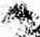

Testimony Concerning JEHOVAH HIS NAME, KINGDOM and PURPOSES
this Kingdom Gospel J S MUST BE BREACHED |
" KINGDOM HALC
^4’-.. <Columoiag M©« '
■: ' ■• -V.:v- ■ ;■ ■ ■,■■■■ ''•
tej f. ' ■; - •. • '
* Recorded in Five-Minute Lectures
■■■ ■ . ■
FOREWORD
This little booklet containing the lectures by Judge Rutherford which have been recorded upon phonograph records is prepared to assist those of good will to a better understanding of Jehovah's purposes.
In the lectures many Scriptures are referred to in support of the statements made. Questions will arise in the minds of the listeners. The Scriptures are listed at the end of each lecture, in order that the witness can • refer quickly to them and give scriptural answers to the questions. The small superior figures scattered through-■ the text indicate the proper reference.
After running a record or two a discussion of the subject matter naturally follows. With this aid the witness can call attention to the important points of the lecture i ~ and answer any further questions. A list of questions is ; also included which can be used in a further study of these very helpful talks. It is by discussing these mat-i . ters, and asking questions about them, and receiving sat-• i isfactory answers with scriptural proof that one learns of Jehovah’s wonderful purposes. This is an excellent manner of preaching the Kingdom message.
INDEX
Page
Rebellion..............................
Purgatory.......................
Resurrection........................
Keys_______________________________...
Index to Watch Tower Publicationa....60
(No. 1)
The name Jehovah applies exclusively to the Supreme Being. ’ He is the Most High, above all. * His name Jehovah signifies His purpose toward His creatures. ’ He is the Almighty God, which means tnat He is the Creator of all things in heaven and in earth, and that His power is almighty and nothing can successfully resist Him. God created man and created the earth as a place for man to live. ’All men who will ever gain life everlasting must know and obey Jehovah God.
2. Jehovah provides two primary ways for man to gain a knowledge of Him: '(1) by man’s observing the things created, which of themselves silently tell of a supreme power, and ’(2) by His revealed Word, which is the Bible, otherwise called the Holy Scriptures. 'Jehovah God long ago caused faithful men to write the Bible at His dictation, and this divine record is made for the purpose of giving man needed information. 'The Bible is the truth, and for centuries has successfully resisted all efforts to discredit it.
3. ‘“All the human race are the offspring of one man, whose name was Adam and who was created by Jehovah God a perfect man. 11 That man disobeyed Jehovah and was sentenced to death, after which all of his children were born; and for that reason all the human race by inheritance are sinners. “ The Scriptures truly declare that Jehovah God is love, which means that He is unselfish and that He does good unto all creatures without any gain to himself. ” Every act of Jehovah is prompted by love or unselfishness, hence He is wholly devoted to righteousness. ” It is His will that Uis creatures be wholly devoted to righteousness. " He has provided the means ’ for all men to gain a knowledge of the truth in order that they may learn the way of righteousness and live for ' ever in happiness. We have now come to the time when men are given greater opportunities than ever before to learn the way of righteousness and life.
4. “Jehovah God is the giver of life; hence it is prop, erly said of Him 11 He is the fountain of life. “ His beloved Son is Christ Jesus, whose position in the universe - is next to that of Jehovah. “The purpose of Jehovah is to give life to obedient men by and through .the ministration of Christ Jesus when such men are fully obedient to r Him. ” For this reason Jesus said of Jehovah and for the benefit of men: “This is life eternal, that they might know thee the only true God, and Jesus Christ, whom thou hast sent. ” (John 17:3) No man can get everlast-
•;* ing life without knowing Jehovah and obeying Him.
, , ’■ 5. A meek person is a teachable person, that is to say,
a person who is willing to be taught. ’’Jehovah's promise to man is that He will teach the meek in the way that he . should go; ” hence if a man seeks knowledge, earnestly desiring the same, God will reward his efforts. “Jehovah has now brought to pass conditions in the world that make it possible for man to understand His name and His purpose, and for this reason He has supplied the • means for understanding.
6. “Jehovah commands that all men shall love Him , > with a pure heart and must be obedient to His commandments in order to prove their love for Him. Such is not a
•. . selfish command, but is entirely unselfish and for the special benefit of man. ” There are mighty creatures that . are called gods, because god means “mighty one”, but
• there is but one Jehovah, the Almighty God. ” He is the
Eternal One, and there is none other who can give life everlasting to man. It would be inconsistent for God to . give everlasting life to anyone out of harmony with Him, and therefore He tells man that if he desires to have everlasting life he must be obedient. “Jehovah also com-< mands that man shall make no image and worship that.
That requirement is for man’s best interests. If a man ■> devotes himself to an imago or thing, that tends to turn
■. a- y .
his mind and his affections away from God and to lead him into destruction. “All law and commandments of Jehovah are for man’s good; and the more fully we understand them and obey them, the more we love Jehovah. That which is of greatest importance to man is to, gain a knowledge of Jehovah as set forth in the Bible. ”“The law of the Lord is perfect, converting the soul: the testimony of the Lord is sure, making wise the simple.”
7. Since God created the first man perfect, and all men are the offspring of that first man, why is there so much sickness, distress and sorrow and death amongst the human race! Is Jehovah responsible for all this sorrow and suffering amongst men, including death! Jehovah is not responsible at all therefor. The Bible answer to the question as to why these disagreeable things have come to pass will be answered in another speech called "Rebellion”.
Scripture References: (1) Ex. 6:3; Paa. 83:18: Isa. 12:2; 26:4; (2) Gen. 14:22, A.R.V.; Psa. 7:17; (8) Ex. 6:3; (4) Gen. 17:1; Psa. 91:1; Isa. 46:12, 18; (6) Jno. 12:60; 17:3; (6) Rom. 1:20; (7) Psa. 103:7; 147:19-20; 2 Tim. 3:16, 17; (8) 2 Pet. 1:21; Josh. 8:32-35; (9) Psa. 119:142, 161; Jno. 17:17; Isa. 8: 20; (10) Rom. 5:12, 18; Deut. 32:4; (ll)(Gen. 3:17-19; 4:1, 2, 26; 6:4; Psa. 61:5; (12) 1 Jno. 4:16; (13) Psa. 11:7;
(14) 1 Pet. 1:16, 16: (16) Col. 1:9, Dlag.; Isa. 26:9; Zeph. 3:9 (16) Rom. 6:23; 1 Jno. 5:11; (17) Psa. 36:9; Prov. 14:27; Jer. 2:13:17:13; Rev. 21:6: (18) Heb. 1:6; Jno. 6:22; Phil 2:9-11; Luke 10:22; Eph. 1:21; Matt 28:18; (19) Acts 3:23;
(20) Jno. 17:3; (21) Psa. 25:9; (22) Prov. 2:3-5; Matt. 7:7-11; (23) Dan. 12:9, 10; Rev. 21:6; 22:1; (24) Mark 12:29. 30; Deut. 8:2; Ex. 16:4; (25) Gen. 3:5: Ex. 12:12; 18:11; Deut. 5:7; Psa. 82:6; 95:3; (26) Deut 33:27; 1 Tim. 1:17; Rom. 6:23; (27) Ex. 20:4. 6; Lev. 26:1; Deut. 6:7-10; (28) Deut. 6:24; 8:16; 10:13; 30:6; Psa. 73:1; (29) Psa. 19:7.
Reading References: (1) The name Jehovah occurs some 7,000 times In the Old Testament, generally translated Loan in the Common Version. (3) Reconciliation, p. 178; Life. p. 93; Who is God, p. 4. (7,8.9) Creation, p. 12. 13. 116-136.
(12) Government, p. 109. (23) Light 2, p. 254. (25) Creation, pp. 11-26. .
« ■< . REBELLION
I .
‘, QUESTIONS FOR STUDY ON “JEHOVAH”
fl. What does the name Jehovah mean and why la it so Important that man should know Him?
51; What two sources of Information are open to man? How was God’s Word provided and can we rely upon It?
■ 1 J. Does God receive any benefit from the worship of His creatures? What then, prompts His every act? What Is rlght-
■ eousness? Who are righteous? And what is the reward of righeousnesa?
1 4. 6. Who is the source of all life? How can man gain everlasting life?'
1 6. Why should men love and obey Jehovah ? Why are images forbidden?
I ■ - •
• (No. 2)
• ’ A * I *1 • •
When Jehovah God created the earth and placed man upon it He appointed His spirit creature Lucifer as overlord of the earth, including man.1 It was the duty of Lucifer to obey God and to render aid to man in learning of the unseen things of God's universe. ’ Lucifer became ambitious to control the human race and have men worship him, that he might be one like unto the Most High. Lucifer became a traitor to God. ’ He rebelled against Jehovah's law and induced other spirit creatures to join him in that rebellion. 4 He also caused man to join in that rebellion and to. turn against Jehovah God. Prior to that time God had told Adam that a violation of His law would result in man’s death. ’Adam having willingly violated God’s law, and having joined Lucifer in his rebellion against God, man was sentenced to death. God had provided man with the power to produce his own kind, that is to say, to bring children into existence. • This power man did not exercise while perfect, but after he Was sentenced to death and before he died his children .' were born. ’ For that reason all of them inherited the result of Adam's sentence of death, and hence were born > sinners or imperfect.
2. After the rebellion Jehovah changed the name of • Lucifer, giving him four separate and distinct names, each one of which has a different meaning: ‘Satan, meaning opposer of God; 9Devil, meaning slanderer of God; '“Serpent, meaning deceiver of creatures; and "Dragon, meaning one who tries to devour all who do right. ”At x the same time God sentenced Lucifer, now the Devil, to death, but He did not at that time execute His judgment against the Devil. ”A wicked challenge was made by Satan to Jehovah in which Satan claimed that Jehovah could not put men on earth that would remain true and faithful to Him under the test. That challenge involved the word and name of God; and in order that all creation might learn that the power of Jehovah is supreme, and that He is the only source of life and goodness, God accepted the challenge and 14 has permitted Satan to continue in existence during the many centuries since that he might have full opportunity to prove his wicked challenge. Had God killed the Devil at the beginning of his rebellion the other creatures of the universe would never have had opportunity to determine whether or not man can be true to God under a severe test.
3. ’’Jehovah fixed a time limit during which Satan should have opportunity to do what he could to prove his wicked challenge, and ”at the same time God declared • that when that time limit expired He would then execute His judgment of death against Satan and destroy with him all of those who willingly put themselves on Satan’s side. ” Satan not only is the oppdser of Jehovah, but is man’s worst enemy.
4. ’’The time limit fixed for Satan to carry on his operations is now up, and within a very short time God will, by the hand of Christ Jesus, His Chief executive officer, fight the Devil and his forces at the battle of Armageddon, which will be the worst ever known, and in that • conflict Satan and his organization will be destroyed.
‘•That is the reason why the time is now here when people must hare opportunity to know about Jehovah and His purpose toward them. *° This affords all an opportunity to take their stand either on the Devil’s side or on Jehovah’s side. Only those who take Jehovah’s side will live. A detailed explanation of this matter will be found in the book called Deliverance, ’'and it is of vital impor-ance that you learn the truths therein contained.
5. ” The Devil endeavors to entrap every person who takes his stand on Jehovah’s side, and would succeed if not prevented by the Lord. It is written: ”“The angel of the Lord encampeth round about them that fear him, and delivereth them.” **If one is on Jehovah’s side and faithfully serves Him he may have the assurance that God will provide protection for him. “ No power can successfully resist Jehovah. ” But God does not exercise His power in behalf of anyone except those who diligently try to serve Him. " Be assured, then, that your safety from the Devil depends entirely on your faithfulness to God. ”At the present time it is a great privilege to know how you may receive protection. ”Be diligent, therefore, to learn the truth that leads the way to life and happiness.
Scripture Reference!: (1) Ezek. 28:13, 14; (2) Isa. 14:13,14; (3) Uno. 3:8; Jno. 8:44; Eph. 6:12; Gen. 6:4; (4) Gen. 3:4-6; (5) Gen. 3:17-19; (6) Gen. 4:1; (7) 1 Cor. 15:22; Rom. 5:12; (8) 1 Chr. 21:1; Rev. 12:9; (9) Matt. 4:1; (10) Gen. 3:2; (11) Rev. 20:2; (12) Gen. 3:14, 15; Isa. 14:15; Ezek. 28:16; (18) Job 1:9-11; 2:4, 5; (14) Ex! 9:16; (15) Dan. 7:21, 22, 2527; (16) Acte 17:31; Jno. 5:27; Heb. 2:14; Paa. 145:20; (17) Matt. 13:39; Paa. 110:1; (18) Rev. 16:16; 16:14; Dan. 12:1; Matt 24:21; (19) Matt 24:14; (20) Josh. 24:16;
(21) Prov. 3:13-18; (22) 2 Tim. 2:26; 1 Pet 6:8; (23) Paa. 34:7; (24) Paa. 97:10; (25) Isa. 46:10, 11; Dan. 4:35; Deut. 32:39; laa. 43:13; (26) Paa. 91:1; (27) Paa. 101:6-8; Prov. 29:26; Paa. 97:10; (28) Paa. 97:11; (29) Matt. 7:7, 8.
Reading Reference!: (2) Deliverance, pp. 21-36; (3) Light 2, pp. 307-319; (4) Vindication 2, pp. 87-112; <8-11) Deliverance, p. 33; (9) Government, p. 33; (18) Deliverance, pp. 256-289; (20) Dividing the People, p. 46. "Why Serve Jehovah?"
QUESTIONS FOR STUDY ON '■REBELLION"
11. Who was Lucifer, and what was the commlaalon he received from Jehovah? Why did Lucifer rebel and who joined him in the rebellion? What penalty is provided for violation of God’s law? Who have been sentenced? Has the judgment been executed?
9 2. What challenge did Satan make, and since then what has the real issue before mankind been?
U 3, 4. How long will Jehovah permit His rebellious creatures to defy Him, and how will He put an end to them?
1 5. Are there any promises that Jehovah will protect those who serve Him, and how can one learn the proper course?
(No. 3)
’Jesus is the Son of Jehovah God. * He was the beginning of God’s creation ’and thereafter God used Him as His active agent in the creation of all things. ‘ In the beginning His name was Logos. ‘Jehovah by the exercise of His miraculous power caused the Logos to become a man and called His name Jesus, which means that He is the Savior of the world. ‘ The the chief purpose of Jesus’ being born a man and coming to earth was that He might vindicate Jehovah’s name. ’God made Jesus His witness to the truth, meaning that Jesus must bear testimony before men of the world. ‘When He was thirty years of age He began to go about amongst the people telling them the truth. * He was hated by the Devil and the clergy because He told the truth.
2. The secondary purpose of Jesus’ becoming a man was that He might be the Redeemer or Savior of the human race from sin and death and afford man opportunity to live. "All the human family are the offspring of the imperfect Adam, but it was the perfect man Adam who violated God’s law and was sentenced to death.
3. ”God must be consistent; therefore He could not reverse His judgment and annul the sentence. ” His law upon which the judgment was based required the life of the perfect man. “God could be consistent, however, and permit another perfect man to pay the death penalty in the place and stead of Adam and to thereby provide means for Adam and all of his offspring to be released from death and the effects thereof. ”An angel could not redeem or buy the right to human life, because an angel is greater than a man. Nothing but a perfect man could give his life a ransom or corresponding price for perfect Adam; “ therefore God caused Jesus to be made a man and in the likeness of sinful man in order that He might meet the requirements of God’s law in the place and stead of Adam. ” For this reason it was written, in Hebrews: “But we see Jesus, who was made a little lower than the angels, for the suffering of death, crowned with glory and honour: that he by the grace of God should taste death for every man.” ’"This shows that the death of Jesus may result to the benefit of every man.
4. ’"Jehovah God was under no obligation to provide redemption for man, but His love for man prompted Him to do so; therefore it is written: ’““For God so loved the world, that he gave his only begotten Son, that whosoever belicvcth in him should not perish, but have everlasting life.” ”No person can believe a thing until he first has some knowledge of that thing. ” Men must learn that Jesus is the Redeemer of mankind. ” In order to give thia information to man God has caused the truth to be told or preached by other faithful men from the day of Jesus until now. ” It is the will of God that the people be told about Jesus as the Redeemer, that they might accept Him as their Savior; therefore it is written in the Scriptures: ’’“For whosoever shall call upon the name of the Lord shall be saved. How then shall they call on him in whom they have not believed! and how shall they believe in him of whom they have not heard! nnd how shall they hear without a prcacherT” ” It is for the benefit of the tnen who desire to be saved that the truth is preached to the people. "If anyone claims to preach the gospel but, instead of doing so, teaches the. doctrines of men and receives money therefor, he is doing a very great wrong.
5. Had not God made provision for the redemption of man from death and its effects the entire human race in time would perish for ever. Since nothing but the life of a perfect creature could satisfy the law of God, it follows that the one who redeems man must do so with his own lifeblood; hence it is written concerning the redemption of men: ’"‘‘Ye were not redeemed with corruptible things, (such] as silver and gold, . . . but with the precious blood of Christ.” "Jesus Christ, by the will of God, having purchased the human race by His own blood, the race belongs to Jesus to do with mankind according to the will of God; therefore it is written that Jehovah said of Jesus: “‘‘Ask of me, and I shall give thee the (nations] for thine inheritance, and the uttermost parts of the earth for thy possession.”
6. ” To keep man in ignorance of redemption Satan causes many clergymen to teach that there is no value in the shed blood of Christ. Give no heed to their false teachings. A full explanation of this matter is set forth in the book Reconciliation. ” It is vital to you that you gain a knowledge of the truth as there set forth.
Scripture Reference!: (1) Matt. 3:17; Jno. 20:31; (2) Col. 1:16; (3) Jno. 1:3; (4) Jno. 1:1 (Dlaa.); (6) Jno. 1:14: Matt. 1:21; (6)Jno. 8:49; 12:28; (7) Jno. 18:37; 3:11,32; 7:7; Rev. 3:14; Luke 4:43; (8) Luke 3:23; Matt. 4:17; (9) Matt. 4: 1 11; Jno. 15:18; (10) Matt. 20:28; Jno. 3:15-17: (11) Rom. 6:12; Psa. 51:6; 1 Cor. 16:22; (12) Heb. 6:17; Mal. 3:6 (13) Ex. 21:23; Deut. 19:21; (14) Hoa 13:14; 1 Tim. 2:36; (15) Heb. 2:16; (16) Rom. 8:3; Phil. 2:7; (17) Heb. 2:9; (18) Rev. 22:17; Jno. 10:10; (19) Deut. 32:4; (20) Jno. 3:16; (21) Jno. 9:35-38; 1:7; (2?) 1 Tim. 2:4-6; (23) Jno. 17:20; (24) Jno. 17:18: 20:31; (25) Rom. 10:13-14; (26) Paa. 119: 1-7: Zeph. 2:3; Matt. 7:7-8; Luke 8:15; (27) Matt. 15:9; tea.
56:10-12; Jno. 10:13: (28) 1 Pet 1:18-19; (29) Acte 20:28;
1 Cor. 8:19-20; 7:22-23; (30) Pea. 2:8; (31) Jer. 50:66; 2 Cor. 11:13-15; 3 Pet. 2:1; 1 Jno. 4:1-3; (32) Prov. 4:18-22.
Reading References: (1-5) Reconciliation, pp. 106-141; (10-13) Reconciliation, pp. 85-105.
QUESTIONS FOR STUDY ON "REDEMPTION"
11. Who was Jeeue and how did he become a man? What was the chief purpose tn his coming to earth and when did he begin hie mission?
1 2. What was the secondary purpose In his becoming a man, and how can all mankind be released from the sentence of death?
13. Why was the life of a perfect man required, and could God be consistent in permitting such a one to pay the penalty? What prompted God to provide redemption?
1 4. Can one believe a thing he knows nothing of, and how can people learn of the Redeemer? If God had not provided redemption what would happen to the human race?
1 5. What is meant by the shed blood of Christ, and why is it precious?
(No. 4)
’A creature that breathes, moves, is conscious, and thinks, is properly said to live. * Death is the very opposite of life, because a dead man does not breathe, cannot move, he is entirely unconscious, and Jtnows not anything. ’If a creature possessed the right to live he might live for ever. ‘Adam had the right to life, but he lost it because of his disobedience to God, and m due time he entirely lost life. ’ No one can get life except by the will of God; therefore it is written: "For the wages of sin is death; but the gift of God is eternal life, through Jesus Christ our Lord.” (Romans 6:23) This text shows that life and death are exactly opposite to each other. God suffers or permits men to have a small mens-ure of life, even though they do not have the right thereto, * but in due time every man dies; hence it is written: “For as in Adam all die, even so in Christ shall all be made alive.’’
2. ’Jesus gave up His life as a man that mankind might have an opportunity to live, and ’God raised up Jesus to life as a. divine spirit and ’clothed Him with authority to give life to man. ” When on earth Jesus said:’“I am come that the people might have life.” 11 He also said that He came to give His life a ransom for many, that is to say, as many as would accept life on the terms offered. (Matthew 20:28) ’’There is no possible way for any man to get everlasting life except by faith in the shed blood of Christ Jesus. ’’Since Jesus gave His life as a man for the redemption of mankind, it is the will of God that all men shall hear the truth and thus be given an opportunity to believe on the Lord Jesus Christ and obey His righteous law and live.
3. ” Satan is bent on turning all mankind away from God and to cause their eternal destruction; hence he keeps the people in ignorance concerning the truth. For that reason Satan has caused so many confusing doctrines to be preached to the people. ” Such false doctrines do not find support in the Bible, but they arc the teachings of men and they originate with Satan. ’’The only place to find the truth is in the Bible. "Jesus said: “Thy word is truth.” ’’The sin of the first man Adam brought death upon all the human race, and the precious blood of Jesus provided the way for all men to have an opportunity for life. It is written, in Romans 5:18: “Therefore, as by the offence of one judgment came upon all men to condemnation; even so by the righteousness of one the free gift came upon all men unto justification of life.”
4. ” In order to accept Jehovah’s gracious gift of life man must learn of the provision therefor. ’’Although the Devil has for centuries attempted to keep all men
it • life;
from a knowledge of the truth, yet there have at all times been a few men on earth who have believed on and obeyed God. Since the days of the apostles of Jesus there have been comparatively a small number of men and women who have become true followers of Christ Jesus and who have been faithful unto God. “ To such the promise is made: “Be thou faithful unto death, and I will give thee a crown of life.” That means that such faithful ones will receive the highest element of life, which is existence in happiness in a divine state.
5. The great mass of mankind, howeyer, have died in total ignorance of the truth, and hence have had no opportunity to accept Jesus as their Savior. ” It is written in the Scriptures that all of such shall be brought forth from the graves and be given a knowledge of the truth, that they may have opportunity to obey and live. “There are now millions of persons on earth who are hearing the truth, and those who believe on the Lord Jesus Christ, and who obey Jehovah God’s righteous law, shall live and shall not die. “Concerning such Jesus said: “If a man keep my saying, he shall never see death.” .
6. “ Life in happiness is what all creatures desire. ” It would be of no profit to you to gain all the wealth of the earth and fail to get life. The Bible points out the way to everlasting life; and where to find the text, and the explanation thereof, is set out in the book Reconciliation. "You should acquire this correct knowledge and be diligent to teach the same to your children and to your friends. “God made the earth for man to live on, and now is the time for you to learn how you may live for ever on the earth in peace and prosperity with those whom you love.
Scripture References: (1) Gen. 1:20, 21 ,24, 30; 2:7, 19, etc.; (2) Paa. 148:4; Eccl. 9:5, 6. 10; (3) Oen. 1:26-31; (4) Gen. 2:17; 3:19; 5:5; (6) Rom. 6:23; (6) Pea. 89:48; 1 Cor. 15:22; (7) Luke 19:10; Jno. 3:16, 17; 5:25; 6:51; (8) 1 Pet. 3:18 (Dias); Rev. 1:18; (9) Jno. 5:22, 27; 6:33; (10) Jno. 10:10;
(11) Matt. 20:28; (12) Acta 4:12; (13) 1 Tim. 2:4-6; (14) Matt. 13:36-39; 1 Jno. 5:19; 2 Cor. 4:3, 4; (15) Matt. 15:9: Heb. 13:9; (16) Paa. 119:142, 151; 19:9; Eph. 1:13; (17) Jno. 17:17; (18) Rom. 5:12; Paa. 51:5; 1 Cor. 15:22; Jno. 3:14-17; (19) Rom. 10:13-15; (20) Rev. 20:3; Rom. 11:2-5; Luke 12:32; (21) Rev. 2:10; Rom. 2:7; (22) 1 Tim. 2:4; Jno. 5:29(A.R.V.); Acts 24:15; (23) Jno. 11:26; Zeph. 3:9; (24) Jno. 8:51; (25) Paa. 34:12; (26) Mark 8:36; (27) Deut. 6:4-7; (28) Paa. 115; 16; laa. 45:18.
Reading References: (1-13) Reconciliation, pp. 9-48; (7,8) Reconciliation, pp. 128. 129; (14, 15) Reconciliation pp. 100103; Vindication 1, pp. 10, 11; (22-23) Reconciliation, pp. 309312; (28) Reconciliation, pp. 20-22.
QUESTIONS FOR STUDY ON "LIFE"
Hl. What is life? What la death? What Is the right to life? Who has It and who do not have It? If mankind have lost the right to life, how can it be regained?
H 2. Is it God’s will that men should hear the truth and live, and where can one learn the truth?
113-4. Explain Romana 5:18. Have there been many since the days of the apostles who have learned of God's gracious gift?
H 5. What promise is made to the millions now hearing the truth?
H 6. What do all creatures desire, and where can they learn how to live for ever?
(No. 5)
* W hen Satan rebelled he was the king of the world appointed to such position by Jehovah. ’Because of Satan’s rebellion Jehovah gave His word that in His own due time He would take the rulership away from Satan and give the kingdom of the world to Jesus Christ. ’Jehovah could have done this immediately following the rebellion of Satan, but because 4 Satan had declared that God could not put men on earth who would be faithful to Him ’God permitted Satan to continue over a stated period of time that the great question or issue in dispute might be tried and fully determined. ’ In the meantime He would have His faithful men act as His witnesses to the name of^Jehovah, and when the time limit expired He would exhibit His supreme power, that all might know that He is the true and only God, and the source of all life.
2. ' More than nineteen centuries ago Jesus came to earth, and,then Jehovah anointed Him to be the King of the world; ’and for this reason Jesus began to preach ‘ ‘ The kingdom of heaven is at hand ’ ’; meaning that He, . ' Jesus, was the King and now He had been appointed to • that high position. * Satan immediately set about to kill Jesus because God had appointed Jesus to be King. 10 Satan employed every known means to cause the death of Jesus. The clergy of that day were the chief instruments the Devil used to kill Jesus. (John 8:42-44) 11 In time Satan caused his wicked agents to crucify Jesus, and then Satan concluded that he had rid the earth of its promised King. ” He was afraid Jesus might be resurrected; hence Satan tried to prevent His resurrection; but in this he failed. '’Jehovah showed His superior power by raising Jesus out of death, “and then He . exalted Him to the highest place in heaven. “Jesus was then the King, but Jehovah required Him to wait until the 'proper time to begin His reign as King.
3. “Jesus told His disciples that He must die and be raised from the dead “and then He must go away and receive the Kingdom, and that He would then come again and receive His faithful followers and set up His kingdom in full operation. (John 14:1-4) The coming of Christ Jesus and of His kingdom, therefore, is of the greatest interest to all real Christians, “ because it means the end of Satari’s wicked tale and the beginning of the lasting rule of righteousness. “For this reason Jesus taught His followers to pray, “Thy kingdom come.”
ft
50 By constantly praying this prayer His followers would show that they were in full heart accord with the kingdom of righteousness, hence on Jehovah’s side.
4. 21 During the past nineteen centuries Jehovah has caused the truth to be told to the people, and some have believed it and have become the faithful followers of Christ Jesus. 22 During that period of time Jehovah has taken out from amongst the world men and women and made them His witnesses on the earth. Now the end of Satan’s world has come. 2’Christ Jesus has taken His power and begun His reign, 24and now His faithful followers still on earth, appointed to be witnesses for Jehovah, must give testimony concerning the Kingdom. 25 They are commanded to tell the people that Jehovah is God, 2eChrist is King, and that the Kingdom is here. 22In obedience to this commandment men and women for some time have been going from house to house preaching the gospel of the Kingdom by word of mouth and by printed message. 28 Many people have, supplied themselves With these books explaining the truth and have gained a knowledge of Jehovah, and, having so done, are now greatly rejoicing.
5. 28 Upon the earth today there is much woe, distress . and perplexity, and the Devil is falsely trying to make the people believe that God is responsible therefor. Satan causes many schemes to be brought forth by men, by which schemes, it is claimed, peace and prosperity will come to the people. 80 But all of these schemes are certain to fail, the reason being that the time has come for God’s kingdom under Christ to rule the world. Therefore Jehovah says to those who are of good will and who desire righteousness: Sl“Behold my servant [Christ], whom I have chosen; my beloved, in whom my soul is well pleased: I will put my spirit upon him, and he shall shew judgment to the [nations]. And in his name shall the [nations] trust.” The kingdom under Christ is set up , and it will dash to pieces Satan’s rule, that the way may be made clear for righteousness to continue for ever in earth. The destruction of Satan’s organization will soon take place. ’’Armageddon is near at hand!
Scripture References: (1) Ezek. 28:14; Heb. 2:14; (2) Hag. 2:22; Psa. 89:29; 110:1, 2; (3) Rom. 6:23; Heb. 10:28; 1 Sam. 15:23; (4) Job UH; 2:5; (5) Eccl. 3:17; Dan. 7:25-27; Ex. 9:16; (6) Heb. 12:1; laa. 43:10; Acta 15:14; Ezek. 6:7 and 70 similar texts in Ezekiel alone; Paa. 36:9; Jer. 16:19-21; . (7) Luke 3:22; Psa. 45:6, 7; Acts 4:27; 10:38; (8) Matt. 4:17; Luke 17:21 (margin); (9) Matt. 4:1-11; Luke 4:28-30; (10) Luke 6:7; Mark 3:6; Luke 7:30; Matt. 12:24; Luke 8:23; Jno. 7:32; 8:42-44, 59; (11) Acts 3:15; (12) Matt. 27:62-66; (13) Acte 2:24, 32; 13:30, 37; Eph. 1:19-20; (14) Eph. 1:20-22; ", • Phil. 2:9-11; (16) Psa. 110:1; (16) Matt. 16:21; 17:22, 23; 20:17-19; (17) Luke 19:11-27; Jno. 14:3; Matt 25:81-46;
< < (18) Matt 24:14; laa. 32:1; 28:17; (19) Matt. 6:10; (20) Deut ' 6:6; Psa. 86:11, 12; (21) Matt 28:19; Jno. 17:20; (22) Jno.
16:19; 20:21; (23) Dan. 12:1; Rev. 11:17; (24) Matt. 24:14; - Isa. 43:10; (26) Isa. 42:6-8; 44:8; (26) Paa. 2:8-12; Rev. 11: < 16-17; 12:7-10; (27) Acte 2:46; 6:42; 20:20; (28) laa. 12:3;
35:10; (29) Luke 21:25; (30) 1 Theas. 5:3; (31) Isa. 42:1-4; Matt 12:18-21; (32) Rev. 16:16.
Reading Reference1 2: (1-82) The Kingdom The Hope of the ;1■ j World, pp. 8-22; (8) The Kingdom The Hope of the World-, pp. M-88; (24) Who le God, pp. 20-29; (25) Who Is God, pp. 55-63; Dividing the People, pp. 5-23;
(No. 6) .
’Armageddon means the place of assembly of Jehovah’s troops, and hence is the name of the place of battle. ’ Soon there will be a great fight by Jesus and His force on one side, against Satan and his force On the other side. ’ That is the final war and in the Scriptures is called “the battle of that great day of God Almighty”.
2. * The chief reason for the battle of Armageddon is this: to vindicate the nainc of Jehovah; and this can be done only by destroying wickedness. 5 Satan wickedly challenged Jehovah to put men on earth who would remain true to Him, declaring that God could not establish amongst men a government that would be righteous. ’God has given Satan many centuries to prove his boastful challenge, and now, 'the time limit being up, he . must be ousted. ’Jehovah has brought forth His righteous King, Christ Jesus, and placed Him as ruler of the world. Satan refuses to vacate and give up his rule among wicked men and angels. * Therefore God will execute Satan and all of his wicked host that are associated with Satan, including all those on earth that work wickedness. ” Many wicked angels, who are invisible to human eyes, are associated with the Devil, ’’and on earth Satan has, many representatives who rule the nations under him. Satan’s earthly representatives are made up of three elements, according to the Scriptures: religious, political and commercial; and together they constitute the visible part of Satan’s organization. ’’All of these selfish and wicked ones hate Jehovah’s witnesses; hence Jesus says to these witnesses: ‘‘Ye shall be hated of all nations for my name’s sake.” Satan and his host hate everyone who takes his stand on the side of God; ” hence . it is written that Satan is gathering all the nations and rulers of the world unto the ‘battle of the great day of . God Almighty’ with the hope and expectation of destroying those who are on God’s side. The prophecy of Zechariah gives a detailed description of the preparation for this great battle, and the book Preparation makes the whole matter clear. It is to your great interest to acquaint yourself with what is contained in that book.
3. “ The fighting in that battle will be chiefly by unseen warriors, that is, Satan and all of his host of wicked angels which constitute the invisible part of his army. “On earth there will be found on Satan’s side the Roman Catholic hierarchy, the Federal Council of Churches, and various other religious organizations which opperate for selfish gain, and which will be associated with the great men of commerce who use their money and power to oppress the people, and also the professional politicians who do the bidding of Big Business. Together with this unholy alliance will be joined the police power and army and navy, otherwise designated the ‘‘strong-arm squad”. All of these will be without faith in God and His King, and they will all boast of their own power. “On the side of Jehovah will be the , Lord Jesus and His host of holy angels constituting His army. ” In the Lord’s army will be found a little company of Jehovah’s witnesses, visible to human eyes, “and the only part that they will perform in that day of battle will be to sing the praises of Jehovah and His kingdom. “God will give the command, and Christ Jesus will begin the battle.
4. ” The result of that battle will be the greatest trouble ever known since the world began, and the greatest loss of human life. There will be such a terrible slaughter, and the dead will be so numerous, that the survivors cannot bury them. In that battle the religious
‘ I .
leaders, and the principal men of their flocks, will find no way of escape, but all of which shall fall and be crushed to pieces. The twenty-fifth chapter of Jeremiah gives a brief description of that terrible fight. 11 The wicked rule of Satan will be destroyed, and that will be the end of all war and tribulation on earth. The new ruler, Christ Jesus, having destroyed the wicked rule, shall put in full operation His government of righteousness, all to the good of men and to the glory of Jehovah God.
5. Concerning Christ it is written: “The government shall be upon His shoulder; He shall be called the Mighty Counselor, The Prince of Peace; and His government shall never end.’’ ” You should learn more about that righteous government and receive its blessings, because under it all who do right shall live for ever in happiness and peace.
Scripture References: (1) Rev. 16:16; (2) Rev. 19:11-21; (3) Rev. 16:14; (4) Ezek. 5:5-17; 20:5-29; (5) Job 1:11; 2:5; (6) Eccl. 8:11; 12:14; (7) lea. 14:12; Luke 10:18; Rev. 12:9: (8) Gen. 49:10; Paa. 2:6-12; 110:2; Ezek. 21:26, 27; Rev. 19: 11-16; (9) Ezek. 38: and 39; Zech. 14:1-3; (10) Eph. 6:12; (11) Matt. 4:8, 9; (12) Jno. 15:19; Matt. 10:22; (13) Rev. 16:14-16; (14) Rev. 12:7-9; lea. 24:21; Rom. 8:38; Col. 1:16; (15) Isa. 24:21; Psa. 2:1-3; Luke 19:14; Psa. 83:2-4; Ezek. 35: 12, 13; Psa. 94:4; (16) Rev. 12:7; Matt. 25:31; Zech. 14:5; (17) Isa. 43:10, 12; (18) 2 Chron. 20:20-23; (19) Jno. 8:29,49; 5:27; (20) Ezek. 9:5-8; Jer. 25:33-37; Dan. 12:1; Matt. 24:21; Luke 19:27; (21) Matt. 24:14; Isa. 2:4; 9:7; (22) Rev. 21:4; Isa. 35:10; Dan. 2:44; 7:25-27.
Reading References: (1) Liberty, pp. 47-55; (4) Vindication 1, pp. 62-65, 260-261; (9) Vindication 2, pp. 309-348: Preparation, pp. 281-363; (10-11) Prophecy, pp. 124-172; Final War. pp. 3-11; Dividing the People, pp. 24-44; (16) Preparation p. 301;
(17-20) Vindication 1. pp. 94-116.
QUESTIONS FOR STUDY ON “ARMAGEDDON"
H 1. What is the meaning of the name Armageddon, and what Is the chief reason for the battle?
U 2. What was the challenge Satan made, and how long has he had to prove it? How will Jehovah's King execute the judgments rendered against Satan, and who are the Dovil's earthly representatives? Knowing his time Is short what action has Satan taken, and what prophet foretold this?
1 8, Are there many on the Devil’s side? Name some of them. Who are on Jehovah’s side?
1 4. What will take place in this great battle and what prophet describes it? Immediately following the battle what will occur?
(No. 7)
Does every person possess an immortal soul! 1 The only way to obtain a correct answer to that question is to read it in the Bible. What is contained in the Bible is the .truth, because it is the Word of God. The correct answer to the question clears up many other confusing doctrines. ’ The word soul means a living creature. Every living creature is a soul, and that includes men and animals. A man is a soul, but he docs not possess a soul. The body and the breath of life which animates the brain and other organs together constitute a soul or creature. In Genesis 2:7 it is written: “God formed man of the dust of the ground, and breathed into his nostrils the breath of life; and man became a living soul.” This scripture says nothing about God’s giving man a soul.
2. An immortal soul would mean one which is not subject to death and does not die. * When God created man He said to him: ‘In the day that you sin you shall surely die.’ God's law did not mean that merely the body would die, but that the man himself would cease to exist. In Ezekiel 18:4 it is written: “The soul that sinneth, it shall die;” and that alone is proof conclusive that the soul is not immortal. 1 It is written: “What man is he that liveth, and shall not sec death T shall he deliver his
soul from the hand of the gravel” There is not one text of the Bible that says that man has an immortal soul, but, on the eontrary, all texts bearing upon the matter show that man is a mortal soul or creature.
3. The clergy teach that the soul is immortal. What is their authority for such teaching? “Satan, the Devil, is the author of the false teaching that the soul is immortal. “ The Scriptures declare that Satan is the father of lies and always resorts to lying. 1 He deceived Eve, the first woman, by telling a lie. It is written, in Genesis three, that Satan, that old serpent, said to Eve, in contradiction of God's law, “Ye shall not surely die.” “Satan’s purpose in telling that lie was to turn mankind away from God. Ever since then Satan has deceived men and caused religious teachers to tell the people that there is no death. Whenever you hear any company or organization of people teaching that there is no death you may know at once that Satan is the author of that teaching and that it is wholly false.
4. * Satan himself is not immortal. God has sentenced Satan to death, and within a short time now God will destroy Satan, together with all other wicked ones.
When the man Jesus was on earth He was not immortal, because it was written of Him that He was dead for three days and on the third day God raised Him up out of death. ” The angels are not immortal, because it is written in the Scriptures that there are wicked angels and that all the wicked God will destroy. ” Man is made lower than angels. We know from observation that men die. Who, then, is immortal? ’’The Scriptural answer is that God alone is immortal, without beginning and without end. ” When God raised Christ Jesus from the dead He gave to Jesus immortality, so that He cannot die again. ” No one will ever get immortality except those who are the true followers of Christ Jesus and who remain faithful unto death. To the Christians the Scriptures says: ‘Seek ye immortality.’ You know that a man
does not seek what hp already possesses. In addressing true Christians the Scriptures declare concerning the ' soul, that is, the man: “This mortal must put on immortality.” It would be entirely inconsistent for God to give every man an immortal soul and then require Christians to be faithful unto death in order to receive immortality as a reward. •
5. ’’The doctrine of the immortality of all souls is Satan’s lie, and upon that falsehood is based almost all other false teachings. Satan’s purpose of instilling that lie into the mind of men is to reproach the name of Jehovah God, turn men away from God, and ensnare them in his trap and destroy them. ,T If we rely upon the Word of God we will not go wrong. The truth is of vital importance to all now who desire to go in the right way.
Scripture References: (1) Isa. 8:20; Psa. 119:142, 151; Jno. 17:17; Gen. 1:30; (2) Lev. 4:2; 5:1, 2, 4. 15. 17; 7:18, 27; 23:30; Num. 31:28; (3) Gen. 2:17; (4) Paa. 89:48; (5) Gen. 3:5; (8) Jno. 8:44; (7) Gen. 3:5; 1 Tim. 2:14; (8) Deut 30: 17; laa. 14:13, 14; Rev. 12:9; Prov. 12:5; Matt. 7:15; (9) Ezek. 28:19; Isa. 14:15-20; Rev. 20:1-3, 10; Heb. 2:14; (10) Luke 24: 1-7; (11) Eph. 6:12; Psa. 145:20; 139:19; (12) Psa 8:5; Heb. 2:8; (13) Jno. 5:26; 1 Tim. 6:16; Deut 33:27; 1 Tim. 1:17; (14) Jno. 5:26; Rev. 1:18; Rom. 6:9; (15) Rom. 2:7; 1 Pet 1:4; Rom. 8:1618; 1 Cor. 15:53, 54; (16) See No. 8; Isa. 44: 20; Amos 2:4; Isa. 28:15; Jer. 16:19-21; Psa. 119:95; (17) Psa. 119:42, 105, 130, 142, 144.
Reading References: (1) Reconciliation, pp. 49-84; Creation, pp. 52-72, 265-288; (9) Vindication 2, pp. 87-107; Prophecy, pp. 333, 834; Light 2, pp. 185-193, 219-223; (13) Reconciliation, p. 79.
QUESTIONS FOR STUDY ON "SOUL"
U 1-2. What is the meaning of the word soul, and where can we find the correct answer? What does Immortality mean and does the Bible support the doctrine of immortality?
18. Where did this false doctrine originate, and why do the clergy teach there is no death?
. "5 4. Are Satan and the angels Immortal? Who then are immor-
tai, and bow can Immortality be gained?
15. Why has Satan promulgated this lie, and how can we know the truth?
(No. 8)
Where are the dead? Would you wish that question , answered according to man’s theory, or to have the answer as pointed out in the Bible? You will say man’s answer would only be a guess, because no man has ever returned from the dead and told us where the dead are. The clergy teach the people that the dead are alive and conscious either in purgatory, in hell or in heaven. 1 Such teaching is entirely false and is based upon Satan’s lie concerning the inherent immortality of all souls.
2. 1 The Scriptures declare that man is a soul and * the soul that sins shall die, ’and that when man dies he does not know anything, has neither feeling, hearing nor any other sense. It is written, in Ecclesiastes nine: “The living know that they shall die: but the dead know not anything. . . . Whatsoever thy hand findeth to do, do it with thy might; for there is no work, nor device, nor knowledge, nor wisdom, in the grave, whither thou go-est.” 8 In another scripture it is written: “For in death there is no remembrance of thee: in the grave who shall give thee thanks?’’ ’“Like sheep they are laid in the grave.” ’“The dead praise not the Lord, neither any that go down into silence.”
3. Why, in the face of these plain scriptures, do the clergymen teach the people that the dead are alive? ’ The reason is the false teaching originated with the Devil, whose purpose is to reproach the name of Jehovah God and ’cause the people to walk in darkness, ’"and the Devil has overreached the clergymen and causes them to teach false doctrines. " Long ago he deceived men in the
church organizations and caused these false doctrines to be taught concerning the dead; and upon the false assumption, that the dead are alive, is based the false doctrine concerning purgatory and eternal torment. ” If the dead are entirely unconscious, as the Scriptures show, and do not feel, and have no knowledge of any kind, then it would be impassible for them to be suffering in purgatory or in any other place. t
4. But why is it man dies at all! The Scriptures answer that question entirely in a satisfactory manner. ’’Adam, the first man, the father of the human race, sinned, and after he had been sentenced to death for such wrong, and while undergoing that sentence, being sick and imperfect, his children were conceived and bom. For that reason all the human race inherited the imperfections of their father and were bom imperfect or sinners. Jn Romans 5:12 it is written: “Wherefore, as by one man sin entered into the world, and death by sin; and so death passed upon all men, for that all have sinned.”
5. “ Ever since Adam’s day men have been dying, and no man could ever get life everlasting unless Jehovah had made provision for man to live. ” In making this provision Jehovah God sent Jesus to earth to redeem the human race by His own lifeblood, ’’and now God provides that every person who believes this great truth, and who obeys what is written in His law, the Bible, shall live and shall not die. ” For this reason it is written: “For God so loved the world, that he gave his only begotten Son, that whosoever believeth in him should not perish, but have everlasting life.”
6. “ The only way for man to get life is through Christ Jesus; hence it is written: ”“For as in Adam all die, even so in Christ shall all be made alive.” In order for man to receive the benefits of the sacrifice of Jesus and gain life he must first have a knowledge of the truth as it is written in the Bible. ”Of course, Satan, by deceiving
' the clergy and causing them to teach false doctrines, keeps the people in ignorance, but now is God’s time to give the truth to those who really want to know it in order that they may get life. The Bible contains all these < truths, and at this present time God has permitted books to be written and brought to you which explain the Bible, and by the use of these books, together with your Bible, you can learn exactly what you need to know.
7. Since the days of Adam thousands of millions have died and gone into the grave. Not one of these has returned to earth, for the reason, they are entirely out l of existence; ” but God has provided that in due time all the dead in their graves shall be awakened and given a knowledge of the truth in order that they may choose to follow righteousness and live. Jesus said ‘all in their i graves shall be awakened and come forth’. 13 The words of Jesus are true and constitute a safe guide for man. The dead being in their graves and waiting the resurrection proves that they are entirely unconscious and know not anything.
Scripture References: (1) Gen. 3:4; (2) Gen. 2:7; Num. 15: 2 7 <51; 1 Cor. 15:45; Gen. 46:15, 18. 22. 25-27; Ex. 1:5; (3) Ezek. 18:4, 20; (4) Eccl. 9:5, 6. 10; (5) Psa. 6:5; (6) Psa. 49:14; (7) Psa. 115:17; (8) Gen. 3:4; Psa. 22:6-8; 31:11, 18,; 69:7, 9, 20; 74:10, 18-23; Heb. 13:13; Isa. 37:23; (9) Psa. 82:5; Isa. 60:2; (10) Jno. 8:44; (11) Isa. 28:7, 8, 14-18; 56:10-12;
(12) Psa. 146:3, 4; Eccl. 3:19. 20; Psa. 88:10-12; Isa. 38:18. 19; 1 Cor. 15:16-18; (13) Gen. 3:17-19; (14) Psa. 51:5; 1 Cor. 15: 21. 22; (15) 1 Jno. 4:14; Jno. 3:16, 17; Heb. 9:12; (16) Jno. 11:26; Acts 3:23; (17) Jno. 3:16; (18) Acte 4:10-12;
(19) 1 Cor. 15:22; (20) 1 Tim. 2:3-6; Zeph. 3:9; Prov. 2:1-7; (21) Isa. 56:10-12; 9:16; 28:7, 8. 14, 15; Matt. 15:14; (22) Jno. 5:28, 29; (23) Psa. 25:9; 73:24; Isa. 49:7-13.
Reading References: (1) Creation, pp. 265-288; Hereafter, pp. 46-54; (2) Where are the Dead booklet.
QUESTIONS FOR STUDY ON "THE DEAD" . H 1. What do the clergy teach concerning the dead?
i 2. Quote some scriptures describing the condition of the dead? 1 3. Why is there so much confusion concerning the death condition', and who is responsible tor It?
14. Explain the taupe of death.
15. What gracious provision has God made, and what does John 3:16 mean?
16. Through whom shall death be overcome, and life gained?
17. Where are all the millions who have died, and how many shall come forth, and to what shall they come forth?
(No. 9)
The Catholic clergy in particular, and many Protestants, teach the people that those who died in sin are now in “purgatory” or torment. What is meant by “purgatory”! and who are there! “Purgation” means to “cleanse” or “make pure”; and the supposed “purgatory” is presumed to be a place for the cleansing of men from their sins, so that when a sinner dies he might be cleansed after being dead. The clergy claim that this may be done while he is dead. They also teach that the prayers of priests can be said for one in “purgatory” and thereby his term of punishment shortened and his release be much earlier. Many good people have paid large sums of money to Catholic priests to pray for their dead ones upon the theory that they could get them out of “purgatory”. It is therefore seen that the “purga-1 tory” teaching has been used as a means of obtaining revenue.
2. The doctrine of sinners suffering in "purgatory” is wholly false and has brought a great reproach upon the name of Jehovah God. It would be a terrible thing if the Almighty God would commit men to “purgatory” and then permit other men to pray for them to get them out, and ttf receive a money consideration for so doing.
’As the Bible plainly teaches, those who have died are entirely out of existence and unconscious, not knowing anything. If we believe the Bible, then we must certainly know that there is no person in “purgatory”, and that there is no such place in existence. There is not one scripture in the Bible to support the “purgatory” theory. The false doctrine of “purgatory” began to be taught in the Roman Catholic organization some 1600 years ago, and since that time Catholic priests have continued to preach it and collect money for prayers upon the pretext of getting men out of “purgatory”. The people have paid their money and got nothing in return. ’ This is another false doctrine of Satan based upon his original lie, his purpose being to deceive the people and cause them to suffer both mentally and materially. Because this doctrine has been taught so many centuries doubtless many priests in the Catholic organization verily believe it to be true; but that does not make it true. Ask them to show you one text in the Bible to the effect . that the dead are conscious in “purgatory”, and they will not be able to do so.
3. Some will cite the case of the thief that was crucified the day that Jesus died. ’The thief said to Jesus: “Lord, remember me when thou comest into thy kingdom.” Jesus replied: “I say unto thee today [that is, now), shalt thou be with me in paradise.” The word “paradise” means a garden or beautiful condition of the earth, and has no reference to a place of cleansing. ‘Jesus did not go to “purgatory” or any other place that day, because He was dead and in the grave for three days. ’After His resurrection He ascended into heaven. ’“Paradise” has reference to the beautiful earth which will be made so by Jesus during the time of Hi£ kingdom. The thief died that day and went into the grave, and is there yet. The meaning of Jesus’ words, therefore, is this: ’That because the thief exercised faith in Jesus he would be brought forth during the reign of Christ and have an opportunity to live on the beautiful earth. This matter is fully explained in the book Reconciliation, which you should read.
4. Furthermore, priests have no authority to say prayers for forgiveness of sins of those who have died. ’Only God can forgive sins, and prayers for the dead are not heard by Jehovah. ’No man’s prayers are heard until that person believes on God and Christ and then consecrates himself to do the will of God. To claim that men are suffering in “purgatory” and can be released by the prayers of others is not only a false doctrine, but a defamation of God’s name. The dead are in the tomb awaiting to be awakened out of death. “Jesus said: ‘Marvel , not: the hour is coming in which all that are in their graves shall hear His voice and come forth: they that ■ have done good, unto the resurrection of life; and they that have done evil, unto the resurrection by judgment. ’
■ (John 5:28, 29) Each one must decide for himself , . whether he desires to believe the words of imperfect men
• . or to take the authoritative words of the Lord. “ My <• ' * • advice is that you read your Bible, together with the ' /. . i‘ books explaining it, and find out these truths for your-
<>,. self. “Learn of Jehovah and do Uis will, and He will enlighten you. ■
. ■ ' . Scripture References: (1) Psa 115:17; 6:5: Isa. 38:18, 19;
Paa 148:4; Eccl. 9:5, 5, 10; 3:19, 20; Job 14:12; Dan. 12:2;
. 1 Cor. 15:16-18, 20; (3) Gon. 3:4; Jer. 14:14, 15; Isa. 28:15-22;
, Matt. 7:15; 3 Cor. 11: 13-15; Zech. 13:4; Rev. 12:9; Isa 56: 10:12; Matt. 15:9. 14; Isa. 14:6; 1 Tim. 4:1; Heb. 13:9; (3) Luke 23:39-43; (4) Luke 24:6, 7; (5) Luke 24:50-53;
r • Aota 1:9; (6) Exek. 86:35; (7) Acta 24:15; (8) Ex. 34:7;
’• Psa. 103:8; Matt. 6:12; Psa. 180:4; Eph. 4:32; (9) Psa 25:14;
’ 97:11. 13; 1 Pet 8:13; (10) Jno. 5:27, 28; (11) 2 Tim. 3:16,17;
iv ? m,1 l*et. 1:10-18; 3 Pet 1:19-21; (12) Jno. 7:17.
■iff. 1 Reodtnp References: Hereafter, pp. 11-19; Heaven and Pur-ftVlX fatory booklet; (6) Vindication 2, p. 275; Deliverance, p. 18;
H) Creation, pp. 57, 58; Reconciliation, pp. 818-329; (9) Lib-ertTt.V* 80-38. •.
l.'-'i*' hi It •. if,,‘ f -
QUESTIONS FOR STUDY ON "PURGATORY"
f 1. What churches teach the Purgatory doctrine, and what assistance do the clergy (for a consideration) claim they can render to the dead?
T 2. Would it be consistent for Jehovah to punish sinners tn purgatory and then permit other imperfect men to pray for them and have them released? If the dead are really dead, as the Bible teaches, could there be any suffering in purgatory. If there was such a place? Where did this false doctrine originate, and who have profited by It? Is there any scriptural support for this doctrine, what text Is sometimes cited as support?
*1 3. Did either Jesus or the thief go to purgatory on the day they died? Where did they go?
U 4. Who only has the power to forgive sins, and whose prayers are heard by Jehovah? If the dead are not In purgatory, where are they, and how can we learn the truth about them?
„ (No. 10)
The word “resurrection” means a 'standing up again to life’. If, as claimed by the clergy, the dead are alive in “purgatory” or some other place, then it follows that there could be no resurrection; and yet there is no truth more clearly taught in the Bible than that of the resurrection of the dead. Death means the absence of life, and resurrection means awakening to life again. If the dead arc to live again, then they must be resurrected and God has provided that there shall be a resurrection. 1 The basis for the resurrection of the dead is the sacrifice of Christ Jesus. ’All mankind were born in sin, and the death of the perfect man Jesus provided the purchase price for the right of man to live again, and in due time Jesus will awaken them out of death. Men had been dying for 4,000 years before the death of Jesus, and hence they knew nothing about the value of His death. Men have been dying in ignorance of the value of Jesus’ death for the past 1900 years. ’All of the dead in God’s due time shall be awakened out of death, that they may obtain a knowledge of the truth, and then each one for himself must choose to obey God and Christ and live, or else contipue in sin and be forever destroyed. * Therefore it is written: “There shall be a resurrection of the dead, both of the just and unjust.”
2. ’God has appointed a fixed time for the resurrection of the dead, and that time is during the reign of Christ as King of the world. ’His reign has now begun, but His first great act is to destroy Satan and his power, and that will be done shortly, at the battle of Armageddon. ’ Then ,will follow the resurrection of the dead. ’ The resurrec-
tion of Christ Jesus is a guarantee that all who have died in ighorance must be awakened out of death and given a knowledge of the truth. ’ For that reason the Scriptural argument, as set forth in 1 Corinthians 15, is this: ‘If there be no resurrection of the dead, then Christ is not . risen; and if Christ is risen, that is a guarantee that all • the dead shall rise.’
• 8. ■ The fact of the resurrection is complete proof that ' ... the doctrine of “purgatory”, concerning people’s being
t. in a place of suffering, is entirely false. 10 The Scriptures , z. speak of death as sleep, because man is unconscious when
- asleep. " The dead are asleep in Jesus, for the reason that Jesus has bought the right of man to live. There-
• fore it is written: * ‘ For if we believe that Jesus died and rose again, even so them also which sleep in Jesus will
V.'J
' God bring with him. ’ ’ 11 The purpose of the awakening -j.men out of death is to give them an opportunity and trial for life; and this will be given at the appearing of Christ ! Jesus and His kingdom. “During the reign of Christ ' 1 death itself will be destroyed, in this, that all who then obey His righteous law shall live,' and never die, and all '
C.;j
V’' the willfully wicked will be completely destroyed. For '
*4 r.l ' • ’ V
that reason Jesus said: “And whosoever liveth and belicvcth in me shall never die.’’
4. “Jehovah God in His loving-kindness has provided for the redemption of sinful man from death, through Christ Jesus’ sacrifice, and for the resurrection to life of men who believe and obey. 15 The Devil tries to keep the people in total ignorance of this great truth, and for that reason has caused his representatives, the clergy, on earth to teach false doctrines. “What the people must now do is to apply themselves to gain an understanding of the Bible, and to that end must provide themselves with the necessary books to enable them to find the texts in the Bible and learn their meaning. You can do this just as well in your own home as anywhere else. Write The Watch Tower for a list of these books explaining these truths and you will receive such information free of charge. You owe it to yourself and your family to gain this knowledge. “Jehovah’s way is always right and true. Learn that way and live.
5. “Death has brought untold sorrow to mankind. The resurrection will bring boundless joy to those who obey God under Christ’s kingdom, and concerning which ' it is written: “And God shall wipe away all tears from their eyes; and there shall be no more death, neither sorrow, nor crying, neither shall there be any more pain: for the formei; things are passed away.’’ 20 The faithful Christians will have part in the first resurrection, which means life in the spirit with Christ. 11 The obedient ones on the earth during the reign of Christ will be given everlasting life on the earth in complete happiness and joy.
Scripture References: (1) Jno. 6:51; 11:25; 1 Cor. 15:21. 22‘, (2) Rom. 5:12; Heb. 2:9; 1 Tim. 2:3-6; Rev. 1:18; (3) Jno. 5: 28. 29; Acta 3:23; (4) Acts 24:14. 15; (5) Acts 17:31; (6) Rev. 11:~16-19; 19:19, 20; Psa. 110:5, 6; Zeph. 1:8; Isa. 24: 17-21; (7) Rev. 11:18; (8) 1 Tim. 2:3-6; (9) 1 Cor. 15:13; ' (10) Jno. 11:11-14; Dan. 12:2; (11) 1 Thes. 4:14; 1 Cor. 6: 19, 20; 1 Pet. 1:18, 19; (12) 2 Tim. 1:10; 4:1; Isa. 26:9; (13) ,Hos. 13:14; Isa. 25:8; Jno. 8:51; Rev. 20:13, 14; 21:4;
Psa. 145:20; Heb. 10:26-31; Jno. 11:26; (14) 1 Jno. 2:2; Jno. 5:29; Luke 14:14; Jno. 3:16; (15) lea. 56:10-12; Matt. 15:14; 2 Cor. 4:3, 4; Jno. 8:42-44; (16) Prov. 2:1-9; Deut. 6:4-9; (17) Deut. 32:4; (18) Pea. 30:5;-(19) Rev. 21:4; (20) Rev. 20:6; (21) Luke 20:36; Isa. 35:10; 65:21-25; Psa. 85:9-13; lea. 25:6-9; Psa. 96:10-13. •
Reading References: Creation, pp. 289-298; Reconciliation, pp. 296-312; Good News, pp. 37-46; (5) Light 2, pp. 218-229; (21) Deliverance, pp. 333-344; Creation, pp. 355-366; Reconciliation, pp. 335-340;‘Government, pp. 301-336; Vindication 3, pp. 285-357.
QUESTIONS FOR STUDY ON "RESURRECTION"
7 1. Is the doctrine of the resurrection a scriptural doctrine? What does it mean? What is the basis for the resurrection of the dead? Have all people understood the value of Jesus' sacrifice, if not, how will they come to know about it?
7 2. What assurance has been given guaranteeing the resurrection, and has the time for it been fixed?
7 8. Why Is death spoken of as a sleep? Why will people be awakened out of death?
7 4. Distinguish between the first and the general resurrection.
(No. 11)
'Jehovah is the only true God. ’ Satan, the Devil, is the mimic god, the wicked one, and man’s worst enemy. * Every person serves either Jehovah or the Devil. The following words are written in the Bible, which is God’s . Word of truth, to wit (Romans 6:16) : “Know ye not that to whom ye yield yourselves servants to obey, his servants ye are to whom ye obey; whether of sin unto death, or of obedience unto righteousness!” Each person must determine whom he desires to serve, either God or the Devil; 'and the Bible declares that he who knowingly serves Satan shall die, and those who gladly serve Jehovah shall live for ever in happiness.
2. A few pointed examples will help you to understand who serves Jehovah and who serves the Devil. The National Broadcasting Company, and the Columbia Broadcasting System, together with other selfish men, have undertaken to say that only certain clergymen, whom they approve, shall be permitted to use their radio facilities to preach to the people, and that they must preach nothing that is not approved by them. Those same men attempt to control the politics of the country and engage in many commercial and political schemes, which oppress the people. They could not be serving Jehovah, but must be serving the Devil, ’because it is the expressed will of God that all men shall have the privilege of knowing what is in the Bible and freely telling others about it.
3. The German government under Hitler denounces and persecutes all persons who openly declare that they believe on and serve Jehovah God. Moses was a Hebrew, or Israelite, and one of God’s inspired prophets who wrote much of the Bible. ‘The prophecy written by Moses declares that Jehovah would raise up a Greater One, of whom Moses was a type, and that such Greater One would be the Messiah and become the world’s rightful Ruler and Jehovah’s Executive Officer. ’ Many other Bible texts prove that Jesus Christ is that Greater One, the Messiah. The Hitler Government denounces, persecutes and expels from that land Israelites or natural descendants of Abraham, confiscates their property, and denounces Jehovah God and His Word. The Hitler government has undertaken to say that only its state church and the Roman Catholic organization shall freely practice their religion in Germany and that all others in that land must comply with such fixed rules or else be severely punished. ‘ Pharaoh of Egypt likewise ill-treated Jehovah’s chosen people, and the Scriptures declare that Pharaoh was the special representative of the Devil. The Hitler government is in the same class with Pharaoh, and is certain to meet with the same fate at the hand of Jehovah.
4. For years in Germany there have bccr» many earnest Christian people known as Bible Students or Jehovah’s witnesses who have been going about teaching the people the Bible and bringing comfort to those who are in distress. They have spent millions in that land to help the German people, and now in these times of great world distress those faithful Christian people are wickedly per-• secuted, arrested, driven through the streets under the lash of whips, thrown into prison, and some of them killed, merely because such people honestly serve Jehovah God and His King and tell the people about the kingdom under Christ that will bless all the world. It is certain that the Hitler government is not doing this by the will of Jehovah; therefore all must determine that it serves Satan.
Scripture Reference*: (1) Jno. 17:3; Isa. 44:6: (2) 1 Pet . 5:8; Eph. 6:11; (3) 1 Jno. 4:6; 3:8; Matt. 6:24; (4) Prov. 2:
22; Paa. 145:20; 101:8; Amoa 5:4, 6; (5) Matt 24:14; Rev. 22:17; (6) Acta 3:22; (7) Luke 24:27; Jno. 1:45; 4:25, 26; 11:27; (8) Ex. 9:34, 35.:
QUESTIONS FOR STUDY ON "WHOSE SERVANT?” Part 1 11. How many masters are revealed In the Bible and how can we determine who are the aervanta of each?
, 5 2. Point out aome examples of those who serve Jehovah, and
• i those who serve .Satan.
' . 5 3. What Scriptures prove that the promised Messiah Is Jesus
• ■ ;■ Christ and why do others set themselves up as deliverers
'of the people?
54. How did Pharaoh show he was a servant of the Devil, and r • : are there those today that are following the same course?
The persecution of Jehovah’s witnesses today indicates 'V,- •■What? •
' •
.... ■ . . . .
(No. 12)
At a great assembly of Christian people held at Los Angeles on the 25th day of March, 1934, the following Protest was unanimously adopted and was at the same time broadcast over a coast-to-coast network of radio stations, which Protest is in these words, to wit:
> 2. “For many years Jehovah’s witnesses in Germany, unitedly working under the Watch Tower Bible & Tract Society,1 have engaged in bearing testimony to the name and kingdom of Jehovah God. During the past year the German government without cause or excuse has wrongfully seized, confiscated and destroyed the Bibles, song books, furniture and other property of these faithful Christians, prohibited them to meet together and worship God according to His commandments, and has cruelly • persecuted and imprisoned many of them, and, like Pharaoh of old, that government has wickedly opposed Jehovah and defamed His name.
3. “Therefore we, their brethren, ’as followers of Christ Jesus, ’and servants of Jehovah, do earnestly and vigorously protest against such ’unwarranted treatment of Christians by the German ruling power, and we call . upon all true Christians and all fair-minded people throughout the earth, whether Jews or Gentiles, to join ’ in this vigorous protest and demand that Jehovah’s wit; nesses shall, without let or hindrance on the part of the
German government or others, ‘ be permitted to go on in their worship and service of Jehovah God in the manner •/ . which He has commanded, and we register our protest by declaring against Satan and all such oppression and by taking our stand on the side of Jehovah and His kingdom and His people.”
4. * The day is drawing near when Satan and all who serve him shall be destroyed by Christ at the command of Jehovah. Information and warning is now brought to the people, that they may determine whom they wish to serve. ’All may take the Bible and the facts which are well known and determine thereby what is the proper course to pursue. ‘All persons, therefore, who desire to see righteousness prevail and who wish to live in peace and happiness for ever must take their stand firmly on the side of Jehovah God and His kingdom.
5. In order for anyone to become the servant of God, he does not need to join some organization; ‘but the proper way is for each person to consecrate himself to Jehovah, thereby agreeing to serve God and His kingdom.
• Having taken such step, 10 then you should study the Bible and the helps which are provided for the understanding of the Scriptures. 11 In this manner you become teachable and learn the right way to go. Then you should do what is right unto all persons; which means to learn righteousness. In harmony with this Jehovah’s prophet wrote, and his words now apply to the people of good will on earth, which words are, to wit: ’“Before the • wrath of God come upon the wicked world, seek meekness and seek righteousness, and it may be that you shall be hid and protected in the day of great trouble.’ There is only one place of safety, and that is on the side of Jeho-
. vah God. Let all persons be free to believe what they will, but if you desire to live and be happy, put yourself on the side of Jehovah God and His kingdom, become His servant and serve Him faithfully and truly. Do not fol- • <• . low the teachings of men, but follow the teachings of “God’s word of truth as set forth in the Bible.
.. ' Scripture Reference!: (1) 1 Cor. 3:1; Rev. 19:10; (2) Jno.
- 12:26; 1 PeL 2:21; (8) Acta 18:17; Rom. 6:22; (4) Rev. 12:
12. 13; (5) Luke 9:60: 1 Cor. 9:16: (6) Rev. 20:2. 3: Prov. 13:9; 12:7; (7) Pea. 119:106; (8) Paa. 145:18-20; (9) Rom. 12:1. 2; (10) 2 Tim. 2:15; 3:16, 17; (11) Paa. 25:9; (12) Zeph. 2:3; (13) laa. 8:20; Jno. 17:17.
QUESTIONS FOR STUDY ON "WHOSE SERVANT?” Part 2 11-2. What particular peraecutlona have recently come to God'a witnesaea?
1 3. What was the nature of the proteat broadcast at the Los Angeles Convention?
T 4. Why la it ao neceaaary, now, to be found on the aide of Jehovah and Hia kingdom?
H 5. What steps must one take to become a servant of God, and where can one learn of the requirements of Jehovah?
(No. 13)
The word “holy” has been grossly misused, and thereby many persons have been deceived. “Holy” means that which is complete, pure, without fault, and entirely devoted to righteousness. ’Jehovah God is the Holy One, because He is complete, pure, without fault, and entirely devoted to righteousness. The Scriptures, at Psalm 99:5, say: ‘Worship Jehovah, for he is holy.” (A.R.V.) Anything that is out of harmony with Jehovah is unholy.
2. ’ Satan, the Devil, is the wicked one, is entirely out of harmony with Jehovah God, and is unholy. Everything that is of Satan’s organization is unholy. The Scriptures declare that Satan, the Devil, is the invisible ruler of this world and that the world is under his con- trol. ‘ ‘ The world ’ ’ means the organization of the peoples of earth under the supervision of the invisible overlord i. the Devil. ' The only way for a person or thing to become holy is to be entirely separate from Satan’s organization, i ■ or world, and be entirely devoted to God and His kingdom. . •
r .
3. The Catholic church organization is ruled by a few men, which body is called the “Catholic hierarchy”. There are millions of persons who are subject to that, hierarchy but who have nothing to do with ruling the Catholic church organization. 4 Those millions of Catholics desire the truth, but have been kept in darkness by their rulers. My purpose is not to offend anyone who is a Catholic by this statement, ’ but it is to speak the truth from God’s Word that others may be informed. No man or company of men has the power to make anything holy by so declaring. The proclamation of the pope declaring 1933 a “holy year” was made without authority; and hence the year was not holy, nor did it bring peace and prosperity to the people, and everyone knows that fact now. Jhe Catholic hierarchy is not holy, for the reason, it is not devoted to God and His kingdom. It par-.ticipates in the political affairs of this world, and hence is a part df the world, and the friend of the world; and the Scriptures, at James 4:4, say that this world is God’s enemy. 8 Therefore, the Catholic organization serves the Devil, and not Jehovah. The pope now acknowledges that his “holy year” proclamation has failed to bring peace and prosperity, and in his alarm he calls upon all the people to pray that Armageddon may be averted. But his prayers in this behalf will also fail, because ’Jehovah God has declared that the battle of Armageddon shall destroy all worldly organizations to make way for God’s holy kingdom under Christ.
4. No good could result to the people by continuing to support an organization that is out of harmony with God and His kingdom. 8 What the people must now do is th get on the side of Jehovah and His kingdom, regardless of what your religious affiliations may have been. If you would have God’s approval and escape the great tribulation of Armageddon and receive the blessings of His kingdom you must devote yourself to Jehovah, which means to be entirely separate from all human organiza-lions. It is written, in 1 Peter 1:16: ‘Be ye holy, saith Jehovah, for I am holy.’ You cannot be holy unless you separate yourselves from unholy organizations; and this is plainly declared in 2 Corinthians 6: 14-18. ’ You must study the Bible and find out for yourself what is the right way. Do not follow the teachings of men, because all men are imperfect and their teachings are imperfect, regardless of their good intentions. 10 Follow the teachings of God’s Word. Books arc now available which show how to study the Bible and how you can inform yourselves and learn what is the right way to go. ” The failure of the so-called “holy year’’ ought to be sufficient to open your eyes to the fact that doctrines taught by men cannot be relied upon unless those doctrines are entirely supported by God’s Word. And this you can determine only by gaining a knowledge of the truth as set forth in the Bible. 12 Your self-interest demands that you learn the truth and follow it.
5. ” In the kingdom under Christ there will be no rival organizations; because everything must be in harmony with that kingdom, and therefore must be wholly devoted to righteousness. All opposing organizations will be gone and the people will be devoted to God and His righteousness. Then the people will enjoy everlasting peace and unbroken prosperity. Those who then try to do right and render themselves in obedience to God’s kingdom will live for ever in peace and happiness. In this time of world distress it is of the greatest importance that you know the truth.
Scripture References.- (1) Lev. 11:45; 19:2; Psa. 89:18; Isa 6:3; 43:15; (2) Matt. 13:38; 1 Jno. 2:13, 14; 5:18; Matt. 13:39; 2 Cor. 4:4; Jas. 4:4; Jno. 14:30; Isa. 14:6; Psa. 94:20-23; (3) 2 Cor. 6:14-18; Lev. 20:23-26; 1 Pet. 1:13-16; (4) Matt.
23:13; Luke 11:52; Isa. 56:10-12; Ezek. 34:2-10; Isa. 9:13-16; 28:7, 8; (5) Jno. 17:17; (6) Rom. 6:16; (7) Isa. 28:14-22; Matt. 24:21, 22; Rev. 16:14, 16; Zeph. 3:1-9; 2 Pet. 3:10-13; (8) Rev. 18:4; Matt. 24:16-20; Jas. 4:4; 2 Cor. 6:14-17; (9) 2 Tim. 2:15; Acts 17:11; Matt. 7:15-20; 15:9; (10) Psa. 119:105; 19:7-10; 2 Tim. 3:16; (11) 1 Thess. 5:20; Acts 17:11;
(12) Prov. 3:18; 8:23: 1 Pet. 3:10-12: (13) Luke 19:27; Psa. 98:10-13; 97:2; 72:2; Zeph. 3:9; Isa. 9:7; 2:4; Jno. 3:16; Isa. 36:10.
Reading References: (1) Reconciliation, p. 299; Creation, p. 231; (8) Righteous Ruler, pp. 30, 38, 39, 55-64; Way ot Escape, pp. 16-19; (9) Intolerance, pp. 42-61; Health and Life, pp. 38-46.
QUESTIONS FOR STUDY ON ‘'HOLY"
. 11. What Is the meaning of the word "holy”? Who Is "the Holy One”?
, 2. Is Satan holy, and why? What is meant by “the world”, in Bible usage? How can one become holy?
,3. Who rules the Catholic church? Is the Catholic organization holy? What is the attitude of many Catholics toward the truth? Was 1933 a holy year?
1 4. How can the people escape destruction at Armageddon?
15. Will there be 213 rival denominations in the Kingdom under Christ, as there now are? What will then be re' qulred in order to live for ever in peace, prosperity and happiness?
(No. 14)
* The truth is not what man may think, believe and teach, but the truth is what is contained in the Word of God as set forth in the Scriptures, or Bible. Concerning Jehovah it is written, at John 17:17: “Thy word is. truth.” Why! Because Jehovah is the ’Creator of heaven and earth, the source of life, and the Giver of every good and perfect gift. His Word of truth is man’s only safe guide, as it is written, in Psalm 119:105: “Thy word is a lamp unto my feet, and a light unto my path.” Religion is not synonymous with truth, because religion consists of forms of worship and the doctrines of men. ’ There are many religions, and none of them arc wholly devoted to God and His kingdom.
2. 4 The Bible discloses the purpose of the Almighty Creator toward His creatures. ‘ It plainly teaches the origin of man, • tell why men become sick and die, ’why there is so much woe and suffering on earth, and * what will bring’about the end of all wickedness and unhappiness, and what is the hope of the peoples of earth. These things are particularly necessary to know in these * times of great distress. No one can possibly know the truth without having some knowledge of Jehovah and His purpose as set forth in the Bible; and 10 for that reason a knowledge and understanding of the Bible is of greatest importance to the people.
3. “ Man’s worst enemy is the Devil. His name Satan means that he is the opposer of God. ” The purpose of Satan is to keep men entirely in the dark and ignorant • of the truth in order that they may not find the way to God, life and happiness. These facts are plainly written in the Scriptures. ” It is the will of God that men learn the truth, that they may then be free to follow whatsoever course they may desire. 14 Satan’s purpose is to prevent men from learning the truth. ” If there is an organization of men that keeps the people in ignorance of the Bible, it necessarily follows that such organization is serving Satan and is against God and His kingdom; and this is true regardless of what the men in these organizations may claim. The indisputable history of the Catholic hierarchy is that that organization • has kept the people from studying the Bible. That is the best evidence that the Catholic hierarchy is serving Satan and not Jehovah, and hence is an unsafe guide for the people. '"The Catholic hierarchy has been and is chiefly interested in having the people pay into its coffers their hard-earned money and for which they get no valuable return. ” The word of truth is free, and no one has a right to commercialize anything in the name of God and Christ.
These things arc not said to offend the sensibilities of anyone, but that the people may see that ” their only hope is to know God’s truth and obey it; and they can know it only by gaining a knowledge of what is in the Bible. .
.4. All the religious organizations of this world have agreed that they will say nothing about each other’s doctrines that might cause offense. That sounds nice, but it is really a trick of the Devil to keep the people in the dark. Such a course is out of harmony with God’s Word, because 10it is written in the Scriptures: ‘Let the tmth be declared though it make all men liars.’ (Romans three). No one who desires to do right can become offended at the truth. If you are in the dark and going the wrong way and someone shows you the light and points out the right way, you are not offended, but you • z are glad. ” We are now in the last days, meaning the last days of Satan’s false and fraudulent rule. ” We are near the time when God’s kingdom under Christ shall rule the people in righteousness. 11 It is therefore God’s time and His will that the people shall have opportunity to learn the truth. To that end God has brought about facts in fulfilment of His prophecy to enable us to see what these present-day events mean. He has caused books to be published setting forth these facts alongside of His Word of truth as contained in the Bible, and these books are now available that the people may teach themselves.'If course, we must expect the Devil and all of his agents to oppose the circulation of these books; but let the people determine for themselves whether they want to longer be deceived or whether they want to know the truth.' “Jesus declared: “The truth shall make you free.” ' ’
5. “ In this wicked world of satanic rule falsehood and cruelty are in the saddle. In the kingdom of Christ truth and righteousness will rule; and of that righteous kingdom on earth it is written (Psalm 85:10-12): “Mercy and truth are met together; righteousness and peace have kissed each other. Truth shall spring out of the earth; and righteousness shall look down from heaven. Yea, the Lord shall give that which is good; and our land shall yield her increase.”
Scripture References: (1) Psa. 119:142, 151, 160; 12:6; Isa. 40:8; 2 Pet. 1:19; 2 Tim. 3:16, 17; Heb. 4:12; 1 Cor. 3:19; Matt. 15:9: (2) Isa. 42:5; Acta 17:25; Rom. 6:23; Jas. 1:17; (3) Matt. 7:15-23; (4) Eph. 3:11; Isa. 46:11; 55:10. 11;
(5) Gen. 2:7; 3:19; Eccl. 3:19, 20; Psa. 103:14; (6) Rom. 5:12; (7) Rev. 12:12; (8) Zeph. 3:1-8; Dan. 2:34, 35,-44; Isa. 9:6, 7; (9) Luke 21:25, 26; (10) Psa. 111:10; 119:103, 104, 144; Prov. 3:13-18; (11) Matt. 13:39; (12) Isa. 60:2; 42:7; (13) 1 Tim. 2:4; Zeph. 3:9; (14) Rev. 12:9; (15) Rom. 6:16; Ezek. 34: 2-10; (16) Isa. 56:11; Ezek. 22:27; 1 Tim. 6:5; (17) Matt. 10: 7. 8; 2 Cor. 11:7; 1 Cor. 2:12; Rev. 21:6; 22:17; (18) Psa. 119: 113-120; (19) Rom. 3:4; (20) Isa. 2:2; MIc. 4:1; Jno. 6:40; 11:24; 12:48; 2 Tim. 3:1; Jas. 5:3; 2 Pet 3:3; (21) Isa. 11:5; 28:17; 32:1; 45:8; Psa. 96:13; (22) Isa. 62:10; 28:17;
(23) Jno. 8:32; (24) Isa. 14:6; Psa. 74:20; Isa. 28:15.
Rending References: (1) What Is Truth, pp. 3-11; Creation, p. 131, H 2; (2) Reconciliation, pp. 61-73; (8) What is Truth, pp. 28-35; The Kingdom, the Hope of the World, pp. 3-22; (18) Intolerance, pp. 42-61; Home and Happiness, pp. 53-61; (22) Creation, p. 172, Hl.
QUESTIONS FOR STUDY ON "TRUTH” Hl. What Is truth? What is religion? What is the source of each? .
H 2. What momentous truths are found in the Bible? Why is it important to have some understanding of the Bible?
H 3. What doea the Bible reveal about roan’s greatest enemy? Is It right to commercialize the truth?
H 4. What is the latest trick of the Devil in opposition to the truth ?
H 5. Will falsehood and wickedness have any place In the Kingdom of Christ?
The so-called "holy trinity” is one of the false doctrines taught by men. Priests of the Catholic hierarchy have become very angry when the people are told the truth about the "trinity” doctrine. Some of them testified before the Congressional Committee at Washington that a criticism of the "trinity” is so offensive to them that no man should be permitted to use the radio to tell the people about it. 1 Error always objects to being exposed.
5. The doctrine of the "trinity” had its origin with the Devil and was made prominent in the Satanic religions of ancient Babylon and Egypt. It was first introduced into the so-called "Christian church” by a Greek priest in the fourth century. ’ It is a false doctrine because it is contradictory to God’s Word. The “trinity” doctrine is that there are "three gods in one, the Father, the Son and the Holy Ghost, equal in power, substance and eternity”. The clergymen call it "a mystery” because they neither understand it nor can explain it, and they therefore discourage the people in trying to find out the real truth about the doctrine. The clergy say, 'God is one, Jesus is one, and the Holy Ghost is one, and these three added together make one.’ That is a kind of mathematics no one can understand or explain.
3. The truth is reasonable, as shown by the Bible, to wit, ’ that Jehovah God is the Almighty One; that ‘Jesus • is the Son of God; and that ‘ the holy spirit is not a person, but is the invisible power of God operating the things of the universe. In Isaiah 45:5 God says: ‘ I am Jehovah;
there is no God besides me.’ Jesus, the .beginning of God’s creation, says, at Proverbs 8:22: “Jehovah possessed me in the beginning of his way.’’ "Jehovah used Jesus as His active agent in the creation of all things.
’ When on the earth Jesus said (John 12:49): “I have not spoken of myself; but the Father which sent me, he gave me a commandment.” At Psalm 40:8 Jesus said: “I delight to do thy will, 0 my God.” At John 14:28 lie said: “My Father is greater than I.”
4. The word “ghost” appearing in the Bible is properly translated spirit, and the original word shows that it means the power which is invisible to human eyes, exercised by Jehovah. For example: You see the power of electricity operating machinery, but you cannot see electricity. ’God moves the universe by His power, which is invisible to human eyes, that is, by His holy spirit.
5. The reason for this false doctrine of the “trinity” is this: * Satan at all times has defamed God’s name and tried to turn all the people away from the true God.
10 To that end he has deceived and defrauded the people; and the doctrine .of the “trinity” is one of his means of deception. 11 Satan disputes the supremacy of Jehovah and if he can induce the people to believe that there are two others that are equal to Jehovah in power, substance and eternity, as the clergy teach, then he indupes the people to believe that God is not supreme.
6. The fact that the oldest church organization amongst men teaches the doctrine of the “trinity” does not make it true. ” We have now reached the end of the world, and the time is here when the truth is due to be understood and will be understood by all who with unprejudiced mind study the Bible and seek to know the . truth. “Jehovah God is the Eternal One, from everlasting to everlasting; “Christ Jesus is His first creature; and the holy spirit is His power. “ Soon He will exercise His power to destroy Satan’s organization, and “only those who believe and serve the truth will survive. If the clergy really believed God and the Bible their sensibilities would not be shocked when someone tells the people what the Bible says about the so-called “trinity”.. The fact that they are offended proves that their doctrine is false. It is to your interest to know the truth. "Only Jehovah God can give everlasting life, aiifl this He gives through Jesus Christ, Ilia Chief Executive Officer. The harm resulting to men by teaching and believing the false doctrine of the “trinity” is to turn men away from the only source of life. It is written (John 17:3): “This is life eternal, to know thee the only true God, and Jesus Christ, whom thou hast sent.” The book Reconciliation gives a full explanation of these truths.
Scripture Reference!: (1) Isa. 29:15; Jno. 3:20; Amos 5:10; (2) Isa. 8:20; (3) Gen. 17:1; Ex. 6:3; Psa. 91:1; Isa. 13:6;
(4) Matt. 3:17; Jno. 1:34; 3:16; 1 Jno. 4:14; (5) Gen. 1:2: Isa. 11:2: Matt. 3:16; Jno. 14:17; Acta 2:1-4; Eph. 1:13; 1 Pet. 1:11; 2 Pet. 1:21; (6) Jno. 1:3; Prov. 8:30; (7) Jno. 12:49;
(8) Psa. 8:3; Job 9:5-10; 38:31-33; (9) Psa. 74:10; Isa. 62:5: (10) Rev. 12:9; 20:3, 10; 2 These. 2:10; Rev. 18:23; (11) Isa. 14:14; Ex. 5:2; (12) Dan. 12:10: 1 Cor. 10:11; (13) Deut. 33: 27; Psa. 41:13; 90:2; (14) Col. 1:15; Prov. 8:22-30; Rev. 3:14: (15) Dan. 2:44; 2 Pet. 3:10, 12; Isa. 28:21; Zeph. 3:8; Matt. 24:21, 22; Jer. 25:30-38; (16) Jno. 11:26; Ezek. 9:6; Psa. 145: 20; (17) Jno. 3:16; 1 Jno. 5:12; Jno. 10:10; Rom. 6:23.
Reading Reference!: Cause of Death, pp. 10-19; Reconciliation, pp. 85-141, 187.
QUESTIONS FOR STUDY ON "TRINITY"
11, 2. Is the doctrine of the “holy trinity” supported by the Bible? What was Ite origin? Why Is it called a mystery? Why is the truth on this point so offensive to priests and clergy? z
13, 4. What Is the Scriptural truth about the Father? the Son? the holy spirit? (
15. Why does the Devil so strenuously uphold the so-called “trinity doctrine"?
1 6. Does error become truth by reason of age? What great truth is the basis of eternal life?
Millions of good people have been led to believe that the Apostle Peter was the first pope, and that the popes in their regular order have succeeded Peter,and stand in his shoes, and have the sole authority to interpret the Scriptures and to exercise supremacy over the Christians of the world. To support that false claim the words of Jesus are improperly cited, when He said to Peter, ’“I will give unto thee the keys of the kingdom of heaven.” ’ The Bible plainly shows that there have never been any successors to the twelve apostles of Jesus Christ. Peter was one of the twelve, and no one ever succeeded him; hence no man since Peter’s day has had the same power that the Lord bestowed upon Peter.
2. ’The word "keys” used in the foregoing Scripture symbolically represents the privilege of unlocking, that is to say, understanding, the truth relating to the kingdom of heaven. * The prophets did not understand that mystery, but Jesus said to his faithful apostles, at Matthew 13:11: ‘‘It is given unto you to know the mysteries of the kingdom of heaven.” ’Later Jesus said to Peter: ‘‘I will give unto you the keys of the kingdom of heaven”, meaning that he would permit Peter to have the first understanding of this mystery. The pope is the head of the Catholic church organization but he is not the head of the true church.
3. ’ To Jehovah God belongs the true church and ’God has made Christ Jesus the head of the church, as the Scriptures declare. ’ It is to Jesus Christ and the mem-
' bers of his church that Jehovah has committed the kingdom of heaven. * It is tp that divine and invisible organization that Jehovah has delegated the power to rule the world in righteousness. “It is made up of creatures whom God has taken out of the world for His name’s sake. .
4. The keys of understanding of the kingdom of heaven first given to Peter through the operation of the holy spirit made known that God was taking out of the world a people for His name, "and that this favor was first extended to the Jews and later to all without regard to nationality who devoted themselves wholly to God and kept His commandments. The names of these faithful ones are not written in earthly books, but the ” Scriptures declare that they are written in heaven. “The Lord alone knows who they are. “ It is these faithful ones that receive an understanding of the mystery of the kingdom of heaven.
5. “ Sometime after Pentecost all the apostles met together at Jerusalem, and there the Lord revealed to them the mystery of the kingdom of heaven, to wit, that Christ Jesus is the Chief or Head of that organization and that others God has taken out of the world as a people for His name, and “ these must be faithful witnesses to Jehovah, and proving themselves faithful unto death they participate in the " first resurrection, form a part of the kingdom of heaven or the royal house of God, and reign with Christ.
6. Carrying out His well laid schemes of fraud and deceit, “Satan has deceived men, over-reaching them, and inducing them to believe that a man on earth is a successor to the Apostle Peter, and is clothed with the same power and authority that Peter received, and that to him, the pope, is given the privilege of unfolding the Scriptures. There is absolutely no authority for such claim. You know that the pope as the head of the Catholic hierarchy participates in the politics of this world and i is a friend of this world, and concerning this it is written in James 4:4, that he that is a friend of the world is God’s enemy, and hence could not be a successor to the Apostle Peter. Peter, wholly devoted to God, finished his work on earth and no one could succeed him.
7. ”Do not permit Satan to use men to deceive you. 50 Be guided by the Word of God and then you will go in the right way. 21 Every person who now fully separates himself from the Devil’s organization and takes his stand wholly on the side of God may receive the knowledge of the mystery of the kingdom, which was first delivered to Peter, and then to the other apostles. Obtaining this knowledge does not depend upon any man now on earth, because 22Jehovah and Christ Jesus are the teachers.
Scripture References: ■ (1) Matt. 16:19; (2) Acta 2:4, 43; 8:14-18; 2 Cor. 12:12; 1 Cor. 13:8; Rev. 21:14; (3) Rev. 1:18; 3:7; Isa. 22:22; (4) 1 Pet. 1:10, 11; (5) Matt. 16:19; (6) Jno. 1:13; Acts 20:28; 1 Cor. 1:2; 10:32; 1 Tim. 3:5, 15; (7) Eph. 5:23; 1:22; Col. 1:18; (8) Jno. 3:35; 17:2; Luke 22:29; (9) Rom. 8:16, 17; 2 Tim. 2:12; Rev. 14:1-4; (10) Acts 15:14; (11) Acts 1:8; Acts 10; Col. 3:11; (12) Luke 10:20; (13)2Tim. 2:19; (14) Mark 4:11; Luke 8:10; Eph. 3:3-6; Col. 1:25-27; (15) Acts 15:1-18; ,(16) Acts 1:8; Jno. 18:37; 20:21; Rev. 2:10; (17) Rev. 20:6; 3:21; (18) Rev. 12:9; 20:3; Matt. 7:15; Isa. 59:13; (19) Jer. 5:26-31; (20) Psa. 119:105; 91:4; 25:9; 107:7; (21) Rev. 18:4; 2 Cor. 6:14-18; Deut. 29:29; Prov. 3:32; Psa. 97:11; (22) Isa. 30:20; Rev. 3:20; Isa. 25:6.
Reading Reference:. Keys of Heaven, pp. 19-37.
QUESTIONS FOR STUDY ON "KEYS"
11. Do the popes derive their authority by succession from Peter?
U 2. What is the symbolic meaning of “Keys” in Bible usage? What "Keys” were given to Peter? Did anyone else ever have anything to do with Peter’s "Keys”?
5 3. Who is the head of the true church? Who are its members? What authority is given to it?
T 4, 5. What truths were unlocked by Peter’s Keys?
II 6. What great deception has Satan practiced upon men in regard to successors of Peter?
H 7. How can we escape from Satan’s deceptions?
I
• (No. 17)
To be wholly devoted to God and His kingdom means sanctification. 1 When a person believes on the Lord Jesus Christ as the Redeemer whom God has provided for man, and agrees to follow in the footsteps of Jesus by doing the will of God, he thereby makes a consecration. If he then faithfully carries out that agreement, he must become sanctified. How can he become sanctified! Church organizations teach that one to be sanctified must have some kind of a cermony performed for him by a clergyman or preacher in the meeting house or church building. That is not the way the Scriptures say that sanctification is accomplished.
2. ’The faithful apostles of Jesup had consecrated themselves to do the will of God and had followed Jesus for more than three years. ’Jesus had said to them: ‘ ‘ Unto you it is given to know the mystery of the kingdom of God.” 4At the time He spoke to them the mystery was not revealed to them. * He told them that after He had ascended into heaven unto His Father, they would receive the holy spirit and then they would understand. ’Just before His departure, He prayed to Jehovah Concerning these faithful disciples, using these words:
’ ‘‘Sanctify them through Thy truth, Thy word is truth. As thou hast sent me intd the world, even so have I also sent them into the world.” Clearly these words mean that the disciples must know the truth and devote themselves wholly to the truth in order to be sanctified.
3. 7 That same rule applies to all who have since believed on Christ Jesus. To participate in some formal . ceremony performed by men could have nothing to do toward sanctifying you. 'According to the announced rule you must learn the truth as contained in the Bible, then devote yourself to telling others about the truth. That means that you ’ have taken your stand on the side of Jehovah God and His kingdom, *’ that you believe and recognize Christ Jesus as the Savior of the world and "God’s appointed King, and that His kingdom is the only hope for the world. If you truly believe this you cannot fail to tell others about it. .
v/ 4. *’ This message will offend all who arc teachers of / error such as the clergy, but you must not be disturbed by reason of that. ” You cannot be a man-pleaser and at the same time please God. All men who love and serve Jehovah God will Ixj pleased because you tell the truth, but those who are under the control of Satan, the god of this wicked world, will be offended and will say all man-5'. ner of evil things against you and persecute you.
5. 14 To the one who has made a consecration these v words of instruction are given in the Scriptures, to wit: “Study to show thyself approved unto God, sanctify yourselves and make yourselves meet for the Master’s t use.” ”The work of the great Master Christ Jesus is to vindicate Jehovah’s name, and to be meet for His use £ you must be a witness participating in the vindication of Jehovah’s name. ” You must shun vain babblings or doctrines of men and learn and obey the truth of God’s Word. ” No one can gain the truth for you, but you ' must acquire it for yourself by carefully studying the
,, truth as set forth in the Bible. .
>•, 6. ” By the grace of God, books are provided in these
1 • days of great need to enable the people to find in the Bible these truths and to learn how to understand them. That is the reason for so many books now going into ihe . ■’ hands of the people. ” Every question that today arises ¥•
concerning the sickness, suffering, oppression, woe, and distress of the peoples of earth is completely answered in the Scriptures. The only means of relief for the peo-* pie, their uplifting and blessing, is also stated in the ' • ■ Scriptures.
7. At once it becomes apparent that a knowledge and . understanding of God’s Word is not only necessary but it is the only means of sanctification. Learn His truth, obey His commandments, and you will rejoice. The man who finds understanding and wisdom is he who learns and obeys the Word of God. To such Jehovah graciously says: “Happy is the man that findeth wisdom, and the man that getteth understanding: For the merchandise of • “ it is better than the merchandise of silver, and the gain thereof than fine gold. She is more precious than rubies; and all the things thou canst desire are not to be compared unto her. Length of days is in her right hand; , and in her left hand riches and honor. Her ways are t ways of pleasantness, and all her paths are peace. She . '• is a tree of life to them that lay hold upon her; happy is every one that retaineth her.” (Prov. 3:13-18)
Scripture References: (1) Rom. 10:9-10; Mk. 8:34; Heb. 10:7; Rom. 6:3-8; Titus 2:12; Col. 3:1-10; (2) Luke 22:28; Mark 10:28; (3) Luke 8:10; (4) Jno. 7:39; (5) Jno. 14:16, 17, 26; 16:26; 16:7; Acta 1:4, 6; (6) Jno. 17:17, 18; (7) Jno. 17:20; (8) Matt 11:29; 1 Pet 3:14-17; Rom. 15:4; (9) Matt 6:33; (10) 1 Jno. 4:14; (11) Paa. 45:10-15; Jno. 1:49; 12:13, 14; Paa. 2:6; laa. 32:1; (12) Jno. 3:20; Matt 6:11; 10:22;
(13) Eph. 6:6, 7; Jaa. 4:4; Matt 6:24; (14) 2 Tim. 2:15, 21; (15) Jno. 18:37; Acts 1:8; Matt 24:14; laa. 43:10; 61:1-3; (16) 2 Tim. 2:16; Col. 2:22; Phil. 2:12-15; Oal. 5:7; (17) Matt 7:7, 8; Deut 6:6-9; Prov. 3:1-4; (18) Hab. 2:2, 3; Matt 24: 45-47; (19) Amos 3:7; 2,Tim. 3:16, 17; Paa. 94:12; 19:7-10; 17:4; Cot 1:9-13; 2 PeL 1:19-21; Prov. 23:12, 23; Acta 20:32.
Reading References: Final War, pp. 14-20; Hie Works, pp. 28-36; Reconciliation, pp. 255-259; Creation, pp. 231-235; Harp of God, pp. 199-202; (18) World Recovery, p. 63.
.QUESTIONS FOR STUDY ON “SANCTIFICATION" • ‘ fl, 2. What la consecration? What la sanctification?
.18. I* a forinal ceremony necessary to either step? What la
J • •- • ’ ‘
the Scriptural course taken by those who are sanctified? U 4. Are the clergy and priests pleased to see the sanctified bearing witness to the truth?
1 5. What are the instructions of the Bible to the consecrated? i 6. Why has the Lord provided helps to the understanding of the Bible in these "last days”?
7. Does sanctification make one sad, or glad? Why?
i
(No. 18)
Jesus spoke a prophecy concerning the dividing of the j- people which prophecy He said would be fulfilled at His coming for judgment, and which is recorded at Matthew .• ' 25: 31-46. He stated that he would divide the people into
<. two classes, one represented as sheep, and the other class as goats. The sheep take the side of the Lord and the . goats take the side of the Devil. ’Jesus Christ is now at : His temple for judgment. Judgment is in progress and
i- the prophetic parable concerning the sheep and the
goats is now being fulfilled. By the Scriptures and the facts you may intelligently decide which side you are on.
2. ’ There are some persons on earth who are wholly devoted to God and His kingdom and as followers of Christ Jesus these are the witnesses for Jehovah. ’ There are a large number of persons who are members of some so-called organization, and who, under the leadership of the clergy, indulge in cruel persecution of Jehovah’s r witnesses. For example, in New Jersey the clergy have caused the police to repeatedly arrest and imprison, faith,* ful men and women for no offense save that of preaching the gospel of God’s kingdom. In prison these witnesses have often been hungry and sick and their persecutors have continued to cause them to suffer.
3. Jesus foreknew that the cruel clergy and their allies whom He called goats would persecute His faithful followers, .and concerning this goat class he said: ‘“For I was an hungered,and you gave me no meat;I was thirsty, and you gave me no drink; I was a stranger, and you took me not in; naked, and you clothed me not; sick, and in prison, and ye visited me not.” Those are the goats. \ They asked the Lord when they had done such cruel things. ‘Then shall Jesus answer them, saying:’ ““Verily I say unto you, inasmuch as you did it not to one of j the least of these, ye did it not unto me. ’ ’
4. * The persons of good will and kind heart form the company represented as sheep. They see men and women faithfully trying to help others by bringing to them the message of God’s kingdom. ’ Recognizing these faithful ones as the followers of Christ Jesus, they seek to do good unto them because they are the brethren of Christ. They are glad to give these witnesses of the Lord a cup of cold water, some food, and>speak kind words to them, • and when they find them in prison they not only sympathize with the imprisoned witnesses of the Lord, but they do what they can to relieve their suffering.
5. The words of Jesus to the people of good will, called sheep, are these: ““For I was an hungered, and you gave me meat;.I was thirsty, and you gave me drink; I was a stranger, and you took me in; naked, and you clothed me; I was sick, and you visited me; I was in prison, and you came unto me.” These people of good will say to Jesus, “When did we do these good deeds unto you, j - Lord! and the King shall answer and say unto them, ““Verily I say (into you, inasmuch as you have done it unto one of the least of these my brethren, ye have done it unto me.”
6. ,0At the present time the Lord is bringing the truth to the attention of the people thereby giving each an opportunity to place himself on the side of the Lord or against the Lord. When you see clergymen and others persecuting faithful men and women because they are preaching the message of God’s kingdom, and doing this by going from house to house, you may know that such persecutors have placed themselves on the side of the Devil, and to such goats Jesus says: u“Depart from me, ye cursed, into everlasting fire, prepared for the Devil and his angels: These shall go away into everlasting punishment.” Such is their fate. •
7. Those who love righteousness and who do good unto the Lord’s witnesses because they arc preaching the gospel thereby show their love for the Lord, thus taking their stand on the side of the Lord; and they refuse to have any part with the persecutors. 12 To such sheep class the words of Jesus are: ‘‘Come, ye blessed of my Father, inherit the kingdom prepared for you from the foundation of the world.”
8. The kingdom is for those who love and do righteousness. The division of the people into two general classes is now in progress and will continue until the great ” battle of Armageddon, at which time Jehovah will destroy all who are on the side of the Devil and will extend His blessings of the kingdom to all who love and serve Him. “ It is of the greatest importance to you that you now take your stand on the side of the Lord and His kingdom and fully acquaint yourself with His truth.
Scripture References: (1) Mal. 3:1-3: 1 Pet 4:17: (2) Isa. 43:10, 12; 61:1-3; 62:7; (3) Matt 5:10-12; Jno. 16:20; 2 Tim. 3:12; (4) Matt 26:42, 43; (5) Matt. 25:45; (6) Luke 2:14; Ezek. 9:4; Psa. 34:11-22; (7) Matt 10:40-42; Psa. 37; 145: 17-19; (8) Matt. 25:35-40; (9) Acts 9:4; (10) Ezek. 9:4; Matt. 24:14; (11) Matt. 25:41, 46; (12) Matt 25:34; (13) Rev. 16: 16; Psa. 145:20; (14) Psa. 105:42-45; 1 Kings 8:56; Isa. 56:6-13.
Reading References: Cause of Death, pp. 28-36; Dividing the People, pp. 3, 56, 57; (2) Who is God, pp. 20-29; Crisis, pp. 29-49. ,
■ 68 ' SHEEP AND GOATS
' • • , »' . ■■
'' ' QUESTIONS FOR STUDY ON "SHEEP AND GOATS"
• ■ • 11. The parable of the sheep and goats Is a prophecy of what
great erent now taking place?
... : 12. What class In the earth now is represented In the parable
. ; । by the brethren of the King (see versea 40 and 45) ?
1 8, 6. What class was represented by the goats? Why?
. . 14,5,7. What class is represented by the sheep? Why?
1 1 6,8. By what means Is the Lord dividing the people into two
classes? What will happen to the goat class and when? the sheep class? When?
f
J ‘-'I
<► DO YOU HAVE A PORTABLE PHONOGRAPH AND A
!; COMPLETE SET OF JUDGE RUTHERFORD’S
<> 4%-MINUTE LECTURES?
< >
< ► Thbbe short lectures by Judge Rutherford on regular < ► phonograph records have proved to be a very good means J J of carrying the message of the Kingdom to the people, X and there are thousands of persons throughout the-< > United States and other countries who are taking port-J I able phonographs with these records to their friends and < > neighbors so that they may hear the clear and concise < ’ explanation of God’s Word.
JI The Watch Tower Bible & Tract Society has on hand a <» good supply of portable phonographs which were speclal-J ’ ly made for the reproducing of these lectures. These J > phonographs are very sturdily built, light in weight, and < > can be very conveniently carried from place to place with ’ * a full set of the nine discs listed below. Every one of < [ Jehovah's witnesses, as well as Jonadabs and others, < > should obtain this equipment, if possible, and use it in J J his preaching of the gospel. Every company of Jehovah’s ' J witnesses should have one or more of these phonographs < > available. We cannot overstate the rich blessings re-JJ ceived in the use of these machines In spreading the < > message of the Kingdom.
< > The complete outfit can be had for only $19.25. This J J includes the phonograph completely equipped ready for <, use, and 18 of Judge Rutherford's short lectures recorded <> on 9 discs. The lectures are as follows:
|
► |
p-1 |
Jehovah |
P-9 |
Purgatory |
|
> |
P-2 |
Rebellion |
P-10 |
Resurrection |
|
> |
P-3 |
Redemption |
P-11 |
Whose Servant? (Part 1) |
|
► |
P-4 |
Life |
P-12 |
Whose Servant? (Part 2) |
|
< ► |
P-5 |
Kingdom |
P-13 |
Holy |
|
► > |
P-6 |
Armageddon |
P-14 |
Truth |
|
< > |
P-7 |
Soul |
P-15 |
Trinity |
|
< > o |
P-8 |
The Dead |
P-16 |
Keys |
;, P-17 Sanctification
< > P-18 Sfieep and Goats
<►. These records can be run on any phonograph, at 78 " ’ revolutions per minute, and may be secured separately J * for $5.25, If so desired.
!! The Watch Tower, 117 Adams St., Brooklyn, N.Y.
Booklets with Subjects Alphabetically Arranged
|
| ||
|
3. |
Good News | ||
|
• 4. • 5. 6. 7. 8. 9. 10. 11. |
What You Need Where are the Dead? Keys of Heaven Cause of Death The Kingdom Who is God? The Final War Home and Happiness |
| |
|
SUBJECTS | |||
|
Numbers preceding Subjects refer to above Booklets | |||
|
8. '2. 8. 22. 2. 20. ' ‘ 1. 14. 1. 19. L 2. 4. 18. 19. 3. 11. 4. 1. 10. 11. . 12. . 21. 13. 8. • . •/ |
Act of God A Model Prayer A New Name Angels । Armageddon Beyond the Grave Bible, The Can the American Government Endure? Christ’s Second Coming Christ, The Church, The Civilization Doomed Comfort Commerce Creation Divine Prophecy Earth Made Glorious Earth’s New Rulers End of the World, The Executioners Feast. The First Resurrection, The Flee Now Flood, The Funerals God’s Kingdom among You |
8. 12. 13. 9. 18. 19. 7. * 4. 13. 9. 11. 10. 3. 4. 14. 7. 1.' 12. 12. 12. 20. 9. 15. |
Governors Health and Life for People Heaven His Name His Organization Human Creatures Hypocrisy . In the Resurrection where will You be? Is Hell Hot? Jehovah Jehovah’s Glory Jehovah’s Organization Jehovah’s Prophet Jehovah’s Requirements Jehovah’s Witnesses, Why Persecuted? Jerusalem, Ancient and Modern Jesus Judgment of Christians Judgment of the Nations Judgment of the People Justifying War King of Eternity Kingdom Blessings for the People |
INDEX TO WATCH TOWER PUBLICATIONS
61
3. Kingdom, The
8. Kingdom, Hope of the World
9. Know Jehovah 1b God
2. Liberty
6. Location of the Kingdom
14. Love
7. Man
11. Marriage
1. Messengers of Peace
12. Millions Now Living Will Never Die
16. Mimic God, The
20. New Heavens and New Earth
6. Oppression
11. Peace and Prosperity for the People
4. People’s Greatest Need
7. Permission of Evil
10. Prepare for War (Part 1)
10. Prepare* for War (Part 2)
7. Presumptuous Sins
2. Prisoners
20. Prophecy -
3. Prophets Foretell Redemption
4. Prosperity
18. Questions and Answers
6. Ransom Provided
11. Reconstruction
1. Redemption of Man, Why Necessary?
20. Religions
17. Religious Intolerance, Why?
5. Restoration
3. Resurrection
3. Resurrection of Jesus
13. Rich Man In Hell
6. Rock, The .
9. Satan
10. Satan's Organization
6. Sabbath
19. Servant. The
19. Shepherd, The
7. Sheep and Goats
3. Signs in Heaven
13. Sinners In Purgatory
19. Spirit Creatures
12. Standard. The
18. Tabernacle, The
10. Terrible Image (Part 1)
10. Terrible Image (Part 2)
13. Thieves in Heaven
7. Trinity Unveiled
16. True God. The
11. Understanding of the Bible
9. Unselfish, The
17. Value of Knowledge and Understanding
19. Vindication
8. Warning
13. Where are the Dead?
5. Where are the Dead?
15. Way of Escape, The
20. Who Is Your God?
5. Who Is Immortal?
2. Whom do You Honor?
2. Whose Prayers are Answered?
21. World Control
20. World’s Judgment
18. World Recovery
9. Who are God’s Witnesses?
5. Why Do Men Die?
16. Why Serve Jehovah?
' '.'c>' A . QUESTIONS FOR STUDY ON "KINGDOM" fl. When Satan rebelled why did not Jehovah remove him
• ' ’-il %.-■' Immediately as ruler of the world? What Issue had been
i-. raised by the rebellion, and what action will Jehovah take / v W),en the time limit ends?
W . A., < 5 J. Who has been anointed as the new King of the world - : .<and What has Satan sought to do to Him? Why did not the
. new King immediately Assume power and control of the 1
■2 world affairs? , . >
f 8-4. What will the coming of Christ and His Kingdom mean / , and how can his followers show they are on Jehovah’s ’ ■side? Who have been selected to announce the Kingdom , ‘ and how Is it being done?
f 5. Why will all present schemes to bring peace and prosperity fall?